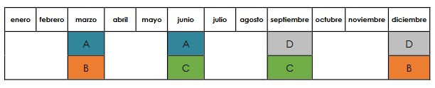

Fuente: Instituto Nacional de Estadística y Censos (INEC, 2018).
La Encuesta Nacional de Empleo, Desempleo y Subempleo (ENEMDU) es una operación estadística fundamental para comprender la situación del empleo en Ecuador. Esta encuesta proporciona información valiosa sobre la actividad económica, las fuentes de ingreso de la población y las tendencias en la población económicamente activa (PEA), población económicamente inactiva (PEI), empleo, subempleo y desempleo a nivel nacional, con niveles de representatividad estadística para las cinco ciudades autorepresentadas; a saber: Quito, Guayaquil, Cuenca, Machala y Ambato.
La ENEMDU se realiza de forma periódica a hogares seleccionados a través de un muestreo probabilístico en dos etapas. En la primera etapa se seleccionan las Unidades Primarias de Muestreo (UPM) por estrato, y en la segunda etapa se seleccionan siete viviendas ocupadas dentro de cada conglomerado. Esta encuesta tiene una cobertura nacional, con excepción de la provincia de Galápagos, y permite desagregar la información a nivel nacional, por área geográfica (urbano y rural) y en las cinco ciudades auto-representadas.
Uno de los aspectos clave de la ENEMDU es su diseño de panel, donde cada panel tiene una duración de dos años y permite medir los cambios en el empleo y desempleo entre meses, trimestres y años consecutivos, así como la estacionalidad en el tiempo. Además, la rotación de paneles con un sistema 2-2-2 permite la compatibilidad con un proceso de actualización cartográfica permanente (INEC, 2018).
La ENEMDU representa uno de los instrumentos estadísticos más importantes para estudiar la situación del empleo en el país, la caracterización del mercado de trabajo, la actividad económica de los ecuatorianos y las fuentes de ingresos de la población. Además, alimenta al Sistema de Cuentas Nacionales administrado por el Banco Central del Ecuador. Su objetivo principal es generar información sobre la actividad económica y las fuentes de ingreso de la población, además de proporcionar estadísticas sobre los niveles, tendencias, y cambios en el tiempo de la población económicamente activa (PEA), población económicamente inactiva (PEI), el empleo, subempleo, y desempleo en Ecuador (INEC, 2018).
Esta encuesta se realiza a hogares de forma periódica y sus resultados son después imputados a cada persona que conforma dicho hogar. Además, se aplica un factor de expansión para obtener estimaciones de la población real.
La ENEMDU es una encuesta por muestreo que tiene como dominio las estadísticas demográficas y sociales sobre el trabajo, el mercado laboral, el empleo y el desempleo. Su universo son las personas de 5 o más años de edad, residentes de del Ecuador, con excepción de la población que reside en viviendas colectivas, viviendas flotantes y sectores con población indigente. La población objetivo son todas las personas de las viviendas particulares dentro del territorio nacional.
La unidad de observación son los hogares en todas las viviendas particulares. Su cobertura es a nivel nacional, por área geográfica (urbano y rural) en todas las provincias del Ecuador, con excepción de la provincia de Galápagos. Los indicadores, tabulados y variables difundidas desde la ENEMDU pueden ser desagregados a nivel nacional, por área geográfica urbano, rural y en las cinco ciudades auto-representadas (Quito, Guayaquil, Cuenca, Machala, Ambato y Loja), por etnia, sexo, grupo estario, entre otros. Su periodicidad y continuidad es mensual, trimestral y anual y se levanta la información los meses de marzo, junio, septiembre y diciembre desde junio de 2007 (INEC, 2018).
El diseño muestral de la ENEMDU corresponde a un muestreo probabilístico con dos etapas de selección.
La UPM es el conglomerado y la Unidad Secundaria de Muestreo (USM) son las viviendas ocupadas4.
El marco muestral es construido de acuerdo a los resultados definitivos y la cartografía del VII Censo de Población y VI vivienda del 2010 (CPV-2010). Sin embargo, ha habido actualizaciones cartográficas debido al agotamiento de unidades de observación en determinadas áreas geográficas propios de los movimientos demográficos y los cambios de estructuras habitacionales. Actualmente, existen 1779 sectores y conglomerados (manzanas) (INEC, 2018).
La variable de diseño muestral es el desempleo, tomando como referencia la estimación de esta variable a la ENEMDU 2012. Para el tamaño muestral se requiere de las características a estimar, el nivel de confianza y la precisión requerida. El nivel de confianza usado es del 95% y el margen de error relativo es de 0,15. Finalmente, la muestra es seleccionada por cada estrato dentro de cada dominio de forma aleatoria para cada UPM y USM (INEC, 2018).
Para determinar el tamaño muestral de la ENEMDU, se emplean distintas herramientas metodológicas de índole cuantitativo. Analíticamente y considerando que se encuestan sietes viviendas de cada conglomerado establecido, el INEC encuesta a 2438 conglomerados que equivalen a 17066 viviendas, distribuidas como se observa en la tabla a continuación.
| Código de provincia | Provincia | Conglomerados |
| 01 | Azuay | 208 |
| 02 | Bolívar | 38 |
| 03 | Cañar | 42 |
| 04 | Carchi | 32 |
| 05 | Cotopaxi | 72 |
| 06 | Chimborazo | 76 |
| 07 | El Oro | 170 |
| 08 | Esmeraldas | 76 |
| 09 | Guayas | 432 |
| 10 | Imbabura | 58 |
| 11 | Loja | 70 |
| 12 | Los Ríos | 110 |
| 13 | Manabí | 176 |
| 14 | Morona Santiago | 32 |
| 15 | Napo | 26 |
| 16 | Pastaza | 24 |
| 17 | Pichincha | 342 |
| 18 | Tungurahua | 232 |
| 19 | Zamora Chinchipe | 26 |
| 20 | Galápagos | 24 |
| 21 | Sucumbíos | 30 |
| 22 | Orellana | 28 |
| 23 | Santo Domingo de los Tsáchilas | 52 |
| 24 | Santa Elena | 38 |
| 90 | Zonas no delimitadas | 24 |
Fuente: Instituto Nacional de Estadística y Censos
En primera instancia, la selección de las UPM que forman parte de la muestra, de acuerdo con el tamaño establecido, se realiza de manera independiente en cada uno de los dominios de forma aleatoria, asignando a cada UPM igual probabilidad de ser seleccionada. De la misma forma, la selección de viviendas es aleatoria dentro de cada UPM seleccionada.
Esta encuesta es de tipo panel, donde cada panel tiene una duración de dos años, el cual mide los cambios en el empleo y desempleo entre meses, trimestres y años consecutivos, así como la estacionalidad en el tiempo. Cada panel comprende siete viviendas efectivas por conglomerado o UPM, es decir, el panel y su seguimiento son a nivel de conglomerado. En la muestra existen tres viviendas de reemplazo por cada conglomerado.
La rotación de paneles tiene un sistema 2-2-2, un panel es visitado en dos trimestres consecutivos, en los siguientes dos trimestres no se realiza visitas y en los siguientes dos trimestres la segunda visita. Entre los beneficios de la rotación de paneles está la compatibilidad con un proceso de actualización cartográfico permanente, es decir, permite identificar el panel tanto para las viviendas como para el conglomerado (INEC, 2018).
A partir del 2021, el INEC presenta resultados acumulados trimestrales y anuales. Los resultados trimestrales se generan de la acumulación de 3 meses consecutivos (trimestre 1: enero, febrero, marzo; trimestre 2: abril, mayo y junio; trimestre 3: julio, agosto y septiembre y trimestre 4: octubre, noviembre y diciembre); mientras que, los resultados anuales corresponden a la acumulación de 12 meses continuos (enero a diciembre). La ventaja de presentar resultados trimestrales y anuales permite obtener mayor representatividad de la información, respecto a los resultados mensuales. La información de mercado laboral que se obtiene de la ENEMDU acumulada trimestral tiene representatividad a nivel nacional, área y las 5 ciudades (Quito, Guayaquil, Cuenca, Ambato y Machala), y lo resultados de la ENEMDU acumulada anual, además de las desagregaciones de la acumulada trimestral, tendrá representatividad provincial.
El factor de expansión es un multiplicador basado en una muestra que permite transformar de datos muestrales a datos poblacionales. Este factor se calcula de acuerdo a las posibilidades de selección de los elementos de la muestra, siendo el inverso de la probabilidad de selección de los elementos. El procedimiento de ponderación se realiza igualmente en dos etapas, la primera calcula la ponderación por conglomerado o UPM y la segunda calcula una ponderación de viviendas dentro del conglomerado, aplicado un ajuste por no respuesta de ser necesario. Finalmente, la ponderación total asignada es el producto de estas dos ponderaciones (INEC, 2018).
El ajuste o calibración de los factores de expansión consiste en la creación de un componente extra en la fórmula de cálculo, para poder ajustar la población estimada por medio de la encuesta, con un dato o un parámetro conocido. En el caso de la ENEMDU, este parámetro son las proyecciones poblacionales a la fecha de realización de la encuesta.
Entre las variables que incorpora la base de datos de la ENEMDU anual 2023, se encuentran algunas que permiten realizar distintas desagregaciones territoriales. Para el caso del análisis realizado se emplearon particularmente dos: i) “área” (área1=urbana y área2 =rural): que hace referencia a las zonas urbanas y rurales existentes al interior de un determinado territorio y ii) “ciudad”: que alude a la clasificación político-administrativa de las parroquias del DMQ. Es importante mencionar que la información para las parroquias urbanas del DMQ se encuentra agregadas con la codificación 170150, mientras que las parroquias rurales se encuentran desagregadas con los códigos 170151 hasta 170185.
A pesar de la desagregación existente a nivel de parroquias rurales, el análisis pierde representatividad estadística cuando se analiza de manera desagregada. Por lo anterior la forma correcta de analizar las parroquias rurales es agregándolas a una sola categoría.
En función de la explicación precedente y por como están orientadas las políticas y programas en el DMQ se presentan cuatro desagregaciones territoriales distintas, pero complementarias, para las cuales fueron calculados los indicadores.
a) Quito ciudad: esta categoría es la que permite replicar los resultados publicados de manera oficial por el INEC y considera exclusivamente a las parroquias urbanas contenidas en el código 170150 y las áreas amanzanadas (área 1=urbano) dentro de la mencionada parroquia. Es decir, muestra una desagregación estrictamente urbana.
b) DMQ urbano: en esta categoría se analiza la parroquia urbana 170150 contemplando las áreas urbanizadas y no urbanizadas (área 1=urbana y 2=rural, de la base de datos ENEMDU anual 2023) dentro de ese territorio.
c) DMQ rural: para analizar el sector rural se tomaron en cuenta todas las parroquias rurales codificadas desde el 170151 hasta 170185 con sus respectivas áreas urbanizadas y no urbanizadas (área 1=urbana y 2=rural, de la base de datos ENEMDU anual 2023).
d) DMQ total: como última categoría se analiza al DMQ total considerando todas las parroquias urbanas y rurales (para las cuales existen observaciones) y sus áreas tanto urbanizadas como no urbanizadas (área 1=urbana y 2=rural, de la base de datos ENEMDU anual 2023). Es decir, se analizan todas las observaciones recabadas para el DMQ como un todo.
Es importante aclarar que, en términos conceptuales el área urbana (que se encuentra como variable de la ENEMDU) se entiende como sectores amanzanados y el área rural como sectores dispersos.
El gráfico precedente es estrictamente explicativo, dado que las dinámicas y complejidades territoriales no se encuentran divididas con tanta rigidez. Sin embargo, nos permite entender que al interior de un territorio clasificado por su división político-administrativa como urbano, puede existir áreas urbanizadas y no urbanizadas; las cuales son las áreas 1 (urbana) y 2 (rural) clasificadas en la base de datos de la ENMEDU anual 2023.
Asimismo, en las parroquias clasificadas como rurales existen estas áreas urbanizadas y no urbanizadas (área 1 y 2, de la base de datos ENEMDU anual 2023) al interior del territorio.
De ser requerido, se podría realizar el mismo análisis de indicadores con una desagregación territorial diferente. Por ejemplo, podría no considerarse la división político-administrativa de las parroquias y analizar la base exclusivamente por áreas urbanas y rurales. Lo anterior dependerá del uso que se de a los datos y de las necesidades propias de los analistas e investigadores.
Para el cálculo de cada uno de los indicadores considerados en el análisis se excluye la categoría de datos en blanco o varios; es decir, no se consideran como una subcategoría más, no se obtienen sus porcentajes y por consecuencia son restados de los valores totales de cada indicador.
En la base de datos que se adjunta a esta nota metodológica, los indicadores de mercado laboral efectivamente calculados se los encuentra en la pestaña denominada “Condición de actividad” (PET, PEA, PEI, tasa de empleo global). Las pestañas denominadas “PET”, “PEA” y “PEI”, contienen valores brutos que no necesariamente reflejan el cálculo del indicador. En este sentido para revisar los datos de empleo remitirse a Condición de actividad.
Como se explicó en la sección 2 del presente documento, Quito efectivamente es una de las ciudades auto representadas para las cuales la muestra obtenida por la ENEMDU es estadísticamente significativa. Por lo anterior, se garantiza la validez de los datos en las 4 desagregaciones territoriales presentadas. Adicionalmente, se advierte que el análisis de las parroquias rurales no puede ser realizado desagregando las mismas, sino como un solo grupo correspondiente a “parroquias rurales” puesto que, por como está distribuida la muestra, se perdería representatividad si se analizan las parroquias rurales por separado.
El diseño muestral de la ENEMDU no garantiza a priori una mayor subdivisión de grupos, más allá de los dominios de estudio previamente establecidos. De manera que es fundamental verificar la validez estadística de las estimaciones que se obtengan previo a realizar análisis y conclusiones sobre grupos específicos del universo de estudio. Para el caso de los indicadores obtenidos en este análisis, se ha verificado la validez de la desagregación territorial, los filtros realizados entre variables y las agrupaciones analizadas.
La ENEMDU permite realizar análisis descriptivos con los resultados de cada trimestre, semestre o año; así como también análisis comparativos respecto a los resultados de las mismas periodicidades, pero anteriores. Los principales resultados se encuentran en los productos estadísticos oficiales de la encuesta (informes y documentos de resultados de la ENEMDU oficiales publicados por el INEC). Es necesaria una evaluación preliminar de la precisión y exactitud de las estimaciones que se obtengan de la encuesta. Para asegurar que los datos fueron correctamente analizados, se replicaron los tabulados de la ENEMDU tanto en indicadores de empleo como en pobreza a través de la desagregación “Quito Ciudad”, logrando el proceso exitosamente.
Por otro lado, es importante considerar que la encuesta en sí misma y los procesos estadísticos y metodológicos que contiene pueden presentar un error relativo (coeficiente de variación), el cual mide la magnitud de la variabilidad de la distribución muestral.
Finalmente, en términos generales la ENEMDU es efectivamente representativa a nivel nacional en áreas urbanas y rurales y para las cinco ciudades auto representadas; entre las cuales se encuentra Quito. Sin embargo, el nivel de confianza y representatividad puede variar en el caso de las poblaciones muestrales a nivel rural. Por lo anterior y con la finalidad de que los resultados obtenidos tengan significancia estadística, las parroquias rurales han sido agregadas para entregar un solo resultado total.
La Población en edad de trabajar (PET) comprende a toda la población que es mayor o igual a 15 años, mientras que la PEA son todas las personas de 15 años y más que trabajaron al menos una hora en la semana de referencia o, aunque no trabajaron, tuvieron trabajo (ocupados), o bien aquellas personas que no tenían empleo, pero estaban disponibles para trabajar y buscan empleo (desempleados). La PEA contiene al empleo adecuado, al subempleo por insuficiencia de tiempo de trabajo, al subempleo por insuficiencia de ingresos, a otro empleo no pleno, a empleo no remunerado, a empleo no clasificado, al desempleo abierto y al desempleo oculto.
Por otro lado, la PEI considera todas las personas inactivas de 15 años y más, no clasificadas como personas con empleo (ocupadas) o desempleadas (desocupados) durante la semana de referencia, como: rentistas, jubilados, pensionistas, estudiantes, amas de casa, entre otros son personas que están fuera de la edad de trabajo o personas que no están buscando empleo. La sumatoria de la PEA y la PEI conforman la PET (Ver Figura 2) (INEC, 2018).
La ENEMDU es un instrumento estadístico fundamental para el estudio de la situación del empleo en Ecuador, ya que proporciona información detallada sobre la actividad económica, las fuentes de ingreso de la población y las tendencias en la PEA, PEI, empleo, subempleo y desempleo a nivel nacional.
El diseño muestral de la ENEMDU, con su enfoque en paneles de dos años de duración y su sistema de rotación 2-2-2, permite un seguimiento longitudinal de los cambios en el empleo y desempleo, así como la identificación de patrones estacionales. Esto lo convierte en una herramienta valiosa para el análisis de la dinámica del mercado laboral ecuatoriano.
Es importante tomar en cuenta las limitaciones metodológicas y en términos de representatividad que puede tener esta herramienta en función de los indicadores que se requieran calcular y las áreas geográficas para las cuales se requiere extraer información. Para los indicadores calculados y generados que acompañan este documento, se garantiza la representatividad para las cuatro desagregaciones territoriales que han sido analizadas.
Mayor información sobre la ENEMDU, sus bases de datos, así como la metodología, guía y sintaxis de variables, se puede encontrar aquí
| Cómo se considera | Cantidad P | Porcentaje P | Cantidad M | Porcentaje M | Cantidad H | Porcentaje H |
|---|---|---|---|---|---|---|
| Mestizo/a | 1.784.638,58 | 91,83% | 930.461,86 | 47,88% | 854.176,72 | 43,95% |
| Indígena | 71.473,91 | 3,68% | 36.730,03 | 1,89% | 34.743,88 | 1,79% |
| Blanco/a | 27.876,88 | 1,43% | 15.578,81 | 0,80% | 12.298,07 | 0,63% |
| Afroecuatoriano/a | 23.545,33 | 1,21% | 10.787,19 | 0,56% | 12.758,13 | 0,66% |
| Multato/a | 16.445,25 | 0,85% | 8.049,17 | 0,41% | 8.396,07 | 0,43% |
| Negro/a | 11.499,39 | 0,59% | 5.372,32 | 0,28% | 6.127,07 | 0,32% |
| Montubio/a | 7.642,37 | 0,39% | 4.084,60 | 0,21% | 3.557,77 | 0,18% |
| Otro/a | 213,71 | 0,01% | 28,60 | 0,00% | 185,12 | 0,01% |
| Total | 1.943.335,42 | 100,00% | 1.011.092,58 | 52,03% | 932.242,84 | 47,97% |
| Cómo se considera | Cantidad P | Porcentaje P | Cantidad M | Porcentaje M | Cantidad H | Porcentaje H |
|---|---|---|---|---|---|---|
| Mestizo/a | 1.784.638,58 | 91,83% | 1.293.894,26 | 47,47% | 1.197.895,61 | 43,94% |
| Indígena | 71.473,91 | 3,68% | 58.369,43 | 2,14% | 50.312,74 | 1,85% |
| Blanco/a | 27.876,88 | 1,43% | 22.418,64 | 0,82% | 20.193,96 | 0,74% |
| Afroecuatoriano/a | 23.545,33 | 1,21% | 16.113,33 | 0,59% | 18.873,66 | 0,69% |
| Multato/a | 16.445,25 | 0,85% | 10.251,47 | 0,38% | 10.055,96 | 0,37% |
| Negro/a | 11.499,39 | 0,59% | 7.206,83 | 0,26% | 8.113,89 | 0,30% |
| Montubio/a | 7.642,37 | 0,39% | 6.496,46 | 0,24% | 5.126,07 | 0,19% |
| Otro/a | 213,71 | 0,01% | 99,46 | 0,00% | 488,32 | 0,02% |
| Total | 1.943.335,42 | 100,00% | 1.414.849,87 | 51,90% | 1.311.060,19 | 48,10% |
| Cómo se considera | Cantidad P | Porcentaje P | Cantidad M | Porcentaje M | Cantidad H | Porcentaje H |
|---|---|---|---|---|---|---|
| Mestizo/a | 1.784.638,58 | 91,83% | 930.461,86 | 47,88% | 854.176,72 | 43,95% |
| Indígena | 71.473,91 | 3,68% | 36.730,03 | 1,89% | 34.743,88 | 1,79% |
| Blanco/a | 27.876,88 | 1,43% | 15.578,81 | 0,80% | 12.298,07 | 0,63% |
| Afroecuatoriano/a | 23.545,33 | 1,21% | 10.787,19 | 0,56% | 12.758,13 | 0,66% |
| Multato/a | 16.445,25 | 0,85% | 8.049,17 | 0,41% | 8.396,07 | 0,43% |
| Negro/a | 11.499,39 | 0,59% | 5.372,32 | 0,28% | 6.127,07 | 0,32% |
| Montubio/a | 7.642,37 | 0,39% | 4.084,60 | 0,21% | 3.557,77 | 0,18% |
| Otro/a | 213,71 | 0,01% | 28,60 | 0,00% | 185,12 | 0,01% |
| Total | 1.943.335,42 | 100,00% | 1.011.092,58 | 52,03% | 932.242,84 | 47,97% |
| Cómo se considera | Cantidad P | Porcentaje P | Cantidad M | Porcentaje M | Cantidad H | Porcentaje H |
|---|---|---|---|---|---|---|
| Mestizo/a | 1.784.638,58 | 91,83% | 363.432,40 | 46,44% | 343.718,89 | 43,92% |
| Indígena | 71.473,91 | 3,68% | 21.639,40 | 2,77% | 15.568,86 | 1,99% |
| Blanco/a | 27.876,88 | 1,43% | 6.839,83 | 0,87% | 7.895,89 | 1,01% |
| Afroecuatoriano/a | 23.545,33 | 1,21% | 5.326,14 | 0,68% | 6.115,52 | 0,78% |
| Multato/a | 16.445,25 | 0,85% | 2.202,30 | 0,28% | 1.659,88 | 0,21% |
| Negro/a | 11.499,39 | 0,59% | 1.834,51 | 0,23% | 1.986,82 | 0,25% |
| Montubio/a | 7.642,37 | 0,39% | 2.411,86 | 0,31% | 1.568,30 | 0,20% |
| Otro/a | 213,71 | 0,01% | 70,86 | 0,01% | 303,20 | 0,04% |
| Total | 1.943.335,42 | 100,00% | 403.757,29 | 51,59% | 378.817,36 | 48,41% |
| Cómo se considera | 0-14 | 15-24 | 25-34 | 35-44 | 45-64 | 65+ | Total general | Porcentaje |
|---|---|---|---|---|---|---|---|---|
| Mestizo/a | 337.137,65 | 295.842,54 | 285.450,81 | 268.059,04 | 381.258,87 | 204.298,02 | 1.772.046,93 | 91,80% |
| Indígena | 14.875,12 | 14.622,11 | 11.421,87 | 12.367,35 | 12.341,86 | 5.516,85 | 71.145,16 | 3,69% |
| Blanco/a | 3.354,85 | 2.775,35 | 3.836,05 | 3.824,91 | 6.882,16 | 7.131,14 | 27.804,47 | 1,44% |
| Afroecuatoriano/a | 4.517,08 | 5.239,10 | 3.851,78 | 4.481,76 | 4.236,72 | 1.218,88 | 23.545,33 | 1,22% |
| Multato/a | 3.623,30 | 2.620,44 | 2.463,16 | 2.904,93 | 3.526,81 | 1.306,61 | 16.445,25 | 0,85% |
| Negro/a | 2.074,98 | 2.006,82 | 2.183,75 | 1.466,87 | 2.762,72 | 1.004,26 | 11.499,39 | 0,60% |
| Montubio/a | 624,51 | 667,80 | 1.574,32 | 1.637,61 | 2.210,59 | 927,54 | 7.642,37 | 0,40% |
| Otro/a | 0,00 | 28,60 | 56,04 | 0,00 | 87,49 | 41,58 | 213,71 | 0,01% |
| Total | 366.207,48 | 323.802,76 | 310.837,78 | 294.742,47 | 413.307,23 | 221.444,88 | 1.930.342,61 | 100,00% |
| Cómo se considera | 0-14 | 15-24 | 25-34 | 35-44 | 45-64 | 65+ | Total general | Porcentaje |
|---|---|---|---|---|---|---|---|---|
| Mestizo/a | 471.062,09 | 426.430,55 | 391.868,63 | 374.699,60 | 540.340,77 | 287.388,22 | 2.491.789,87 | 91,41% |
| Indígena | 21.204,27 | 24.728,27 | 17.553,84 | 16.240,60 | 18.516,17 | 10.439,00 | 108.682,17 | 3,99% |
| Blanco/a | 6.156,98 | 5.494,51 | 5.761,47 | 5.858,62 | 10.918,26 | 8.422,75 | 42.612,59 | 1,56% |
| Afroecuatoriano/a | 7.084,23 | 7.771,58 | 4.549,82 | 8.005,54 | 6.203,96 | 1.371,87 | 34.986,99 | 1,28% |
| Multato/a | 4.042,28 | 3.680,15 | 2.610,19 | 3.765,27 | 4.274,88 | 1.934,65 | 20.307,42 | 0,74% |
| Negro/a | 3.145,40 | 2.473,22 | 2.846,39 | 2.213,70 | 3.500,14 | 1.141,86 | 15.320,72 | 0,56% |
| Montubio/a | 1.232,25 | 1.675,09 | 1.761,82 | 3.025,77 | 2.849,75 | 1.077,85 | 11.622,52 | 0,43% |
| Otro/a | 0,00 | 28,60 | 56,04 | 151,56 | 87,49 | 264,08 | 587,78 | 0,02% |
| Total | 513.927,50 | 472.281,96 | 427.008,22 | 413.960,66 | 586.691,44 | 312.040,29 | 2.725.910,06 | 100,00% |
| Cómo se considera | 0-14 | 15-24 | 25-34 | 35-44 | 45-64 | 65+ | Total general | Porcentaje |
|---|---|---|---|---|---|---|---|---|
| Mestizo/a | 339.770,03 | 298.396,44 | 286.635,57 | 269.435,28 | 385.696,51 | 204.704,75 | 1.784.638,58 | 91,83% |
| Indígena | 14.903,71 | 14.622,11 | 11.476,81 | 12.395,94 | 12.458,16 | 5.617,19 | 71.473,91 | 3,68% |
| Blanco/a | 3.354,85 | 2.775,35 | 3.908,46 | 3.824,91 | 6.882,16 | 7.131,14 | 27.876,88 | 1,43% |
| Afroecuatoriano/a | 4.517,08 | 5.239,10 | 3.851,78 | 4.481,76 | 4.236,72 | 1.218,88 | 23.545,33 | 1,21% |
| Multato/a | 3.623,30 | 2.620,44 | 2.463,16 | 2.904,93 | 3.526,81 | 1.306,61 | 16.445,25 | 0,85% |
| Negro/a | 2.074,98 | 2.006,82 | 2.183,75 | 1.466,87 | 2.762,72 | 1.004,26 | 11.499,39 | 0,59% |
| Montubio/a | 624,51 | 667,80 | 1.574,32 | 1.637,61 | 2.210,59 | 927,54 | 7.642,37 | 0,39% |
| Otro/a | 0,00 | 28,60 | 56,04 | 0,00 | 87,49 | 41,58 | 213,71 | 0,01% |
| Total | 368.868,45 | 326.356,66 | 312.149,88 | 296.147,30 | 417.861,16 | 221.951,96 | 1.943.335,42 | 100,00% |
| Cómo se considera | 0-14 | 15-24 | 25-34 | 35-44 | 45-64 | 65+ | Total general | Porcentaje |
|---|---|---|---|---|---|---|---|---|
| Mestizo/a | 131.292,06 | 128.034,11 | 105.233,07 | 105.264,32 | 154.644,27 | 82.683,47 | 707.151,29 | 90,36% |
| Indígena | 6.300,57 | 10.106,16 | 6.077,04 | 3.844,66 | 6.058,02 | 4.821,81 | 37.208,26 | 4,75% |
| Blanco/a | 2.802,13 | 2.719,15 | 1.853,01 | 2.033,71 | 4.036,10 | 1.291,61 | 14.735,72 | 1,88% |
| Afroecuatoriano/a | 2.567,14 | 2.532,47 | 698,04 | 3.523,78 | 1.967,24 | 152,99 | 11.441,66 | 1,46% |
| Montubio/a | 607,74 | 1.007,30 | 187,50 | 1.388,15 | 639,16 | 150,31 | 3.980,15 | 0,51% |
| Multato/a | 418,99 | 1.059,71 | 147,03 | 860,34 | 748,07 | 628,03 | 3.862,18 | 0,49% |
| Negro/a | 1.070,42 | 466,40 | 662,65 | 746,83 | 737,42 | 137,60 | 3.821,33 | 0,49% |
| Otro/a | 0,00 | 0,00 | 0,00 | 151,56 | 0,00 | 222,50 | 374,07 | 0,05% |
| Total | 145.059,04 | 145.925,30 | 114.858,34 | 117.813,36 | 168.830,28 | 90.088,33 | 782.574,65 | 100,00% |
| Estado civil | Cantidad P | Porcentaje P | Cantidad M | Porcentaje M | Cantidad H | Porcentaje H |
|---|---|---|---|---|---|---|
| Soltero/a | 706.764,83 | 41,88% | 349.304,26 | 20,70% | 357.460,57 | 21,18% |
| Casado/a | 540.694,22 | 32,04% | 271.065,38 | 16,06% | 269.628,84 | 15,98% |
| Unión libre | 228.683,07 | 13,55% | 114.538,63 | 6,79% | 114.144,44 | 6,76% |
| Divorciado/a | 74.436,43 | 4,41% | 51.752,03 | 3,07% | 22.684,39 | 1,34% |
| Viudo/a | 69.233,00 | 4,10% | 52.578,57 | 3,12% | 16.654,43 | 0,99% |
| Separado/a | 67.757,09 | 4,02% | 45.498,49 | 2,70% | 22.258,60 | 1,32% |
| Total | 1.687.568,64 | 100,00% | 884.737,36 | 52,43% | 802.831,28 | 47,57% |
| Estado civil | Cantidad P | Porcentaje P | Cantidad M | Porcentaje M | Cantidad H | Porcentaje H |
|---|---|---|---|---|---|---|
| Soltero/a | 996.932,36 | 41,82% | 495.217,44 | 39,64% | 501.714,92 | 44,23% |
| Casado/a | 778.174,61 | 32,65% | 389.933,38 | 31,21% | 388.241,23 | 34,23% |
| Unión libre | 323.681,46 | 13,58% | 162.069,14 | 12,97% | 161.612,32 | 14,25% |
| Divorciado/a | 97.278,03 | 4,08% | 67.341,56 | 5,39% | 29.936,48 | 2,64% |
| Viudo/a | 95.966,42 | 4,03% | 73.120,61 | 5,85% | 22.845,82 | 2,01% |
| Separado/a | 91.647,55 | 3,84% | 61.732,22 | 4,94% | 29.915,32 | 2,64% |
| Total | 2.383.680,43 | 100,00% | 1.249.414,35 | 100,00% | 1.134.266,08 | 100,00% |
| Estado civil | Cantidad P | Porcentaje P | Cantidad M | Porcentaje M | Cantidad H | Porcentaje H |
|---|---|---|---|---|---|---|
| Soltero/a | 711.922,28 | 41,90% | 351.665,37 | 39,49% | 360.256,91 | 44,56% |
| Casado/a | 544.794,41 | 32,07% | 273.133,41 | 30,67% | 271.661,00 | 33,60% |
| Unión libre | 229.701,07 | 13,52% | 115.047,63 | 12,92% | 114.653,44 | 14,18% |
| Divorciado/a | 74.735,08 | 4,40% | 51.927,27 | 5,83% | 22.807,81 | 2,82% |
| Viudo/a | 69.518,85 | 4,09% | 52.864,42 | 5,94% | 16.654,43 | 2,06% |
| Separado/a | 68.244,61 | 4,02% | 45.810,77 | 5,14% | 22.433,84 | 2,77% |
| Total | 1.698.916,31 | 100,00% | 890.448,88 | 100,00% | 808.467,44 | 100,00% |
| Estado civil | Cantidad P | Porcentaje P | Cantidad M | Porcentaje M | Cantidad H | Porcentaje H |
|---|---|---|---|---|---|---|
| Soltero/a | 285.010,08 | 41,62% | 143.552,07 | 39,99% | 141.458,01 | 43,42% |
| Casado/a | 233.380,20 | 34,08% | 116.799,97 | 32,54% | 116.580,24 | 35,78% |
| Unión libre | 93.980,39 | 13,72% | 47.021,51 | 13,10% | 46.958,88 | 14,41% |
| Viudo/a | 26.447,57 | 3,86% | 20.256,19 | 5,64% | 6.191,38 | 1,90% |
| Separado/a | 23.402,93 | 3,42% | 15.921,45 | 4,44% | 7.481,48 | 2,30% |
| Divorciado/a | 22.542,95 | 3,29% | 15.414,28 | 4,29% | 7.128,66 | 2,19% |
| Total | 684.764,12 | 100,00% | 358.965,47 | 100,00% | 325.798,65 | 100,00% |
| Estado civil | 0-14 | Porcentaje_0-14 | 15-24 | Porcentaje_15-24 | 25-34 | 35-44 | Porcentaje_35-44 | 45-64 | Porcentaje_45-64 | 65+ | Porcentaje_65+ | Total general | Porcentaje |
|---|---|---|---|---|---|---|---|---|---|---|---|---|---|
| Soltero/a | 123.433,5 | 7,31% | 298.920,76 | 17,71% | 152.327,53 | 59.797,68 | 3,54% | 52.096,34 | 3,09% | 20.189,00 | 1,20% | 706.764,83 | 41,88% |
| Casado/a | 0,0 | 0,00% | 3.821,50 | 0,23% | 64.738,94 | 135.083,93 | 8,00% | 225.307,92 | 13,35% | 111.741,94 | 6,62% | 540.694,22 | 32,04% |
| Unión libre | 0,0 | 0,00% | 19.507,78 | 1,16% | 81.531,80 | 66.535,11 | 3,94% | 52.539,69 | 3,11% | 8.568,70 | 0,51% | 228.683,07 | 13,55% |
| Divorciado/a | 0,0 | 0,00% | 299,19 | 0,02% | 3.381,90 | 15.589,43 | 0,92% | 37.139,17 | 2,20% | 18.026,74 | 1,07% | 74.436,43 | 4,41% |
| Viudo/a | 0,0 | 0,00% | 0,00 | 0,00% | 529,50 | 1.344,49 | 0,08% | 15.104,85 | 0,90% | 52.254,15 | 3,10% | 69.233,00 | 4,10% |
| Separado/a | 0,0 | 0,00% | 1.253,53 | 0,07% | 8.328,11 | 16.391,83 | 0,97% | 31.119,27 | 1,84% | 10.664,36 | 0,63% | 67.757,09 | 4,02% |
| Total | 123.433,5 | 7,31% | 323.802,76 | 19,19% | 310.837,78 | 294.742,47 | 17,47% | 413.307,23 | 24,49% | 221.444,88 | 13,12% | 1.687.568,64 | 100,00% |
| Estado civil | 0-14 | Porcentaje_0-14 | 15-24 | Porcentaje_15-24 | 25-34 | 35-44 | Porcentaje_35-44 | 45-64 | Porcentaje_45-64 | 65+ | Porcentaje_65+ | Total general | Porcentaje |
|---|---|---|---|---|---|---|---|---|---|---|---|---|---|
| Soltero/a | 171.697,9 | 7,20% | 434.478,37 | 18,23% | 212.484,74 | 78.217,16 | 3,28% | 71.031,74 | 2,98% | 29.022,48 | 1,22% | 996.932,36 | 41,82% |
| Casado/a | 0,0 | 0,00% | 5.544,26 | 0,23% | 84.685,57 | 192.267,39 | 8,07% | 333.749,49 | 14,00% | 161.927,90 | 6,79% | 778.174,61 | 32,65% |
| Unión libre | 0,0 | 0,00% | 30.285,49 | 1,27% | 113.606,60 | 97.764,51 | 4,10% | 72.011,82 | 3,02% | 10.013,04 | 0,42% | 323.681,46 | 13,58% |
| Divorciado/a | 0,0 | 0,00% | 327,33 | 0,01% | 3.616,18 | 20.793,08 | 0,87% | 49.393,07 | 2,07% | 23.148,38 | 0,97% | 97.278,03 | 4,08% |
| Viudo/a | 0,0 | 0,00% | 175,41 | 0,01% | 599,71 | 2.900,49 | 0,12% | 19.343,80 | 0,81% | 72.947,01 | 3,06% | 95.966,42 | 4,03% |
| Separado/a | 0,0 | 0,00% | 1.471,09 | 0,06% | 12.015,42 | 22.018,03 | 0,92% | 41.161,51 | 1,73% | 14.981,50 | 0,63% | 91.647,55 | 3,84% |
| Total | 171.697,9 | 7,20% | 472.281,96 | 19,81% | 427.008,22 | 413.960,66 | 17,37% | 586.691,44 | 24,61% | 312.040,29 | 13,09% | 2.383.680,43 | 100,00% |
| Estado civil | 0-14 | Porcentaje_0-14 | 15-24 | Porcentaje_15-24 | 25-34 | 35-44 | Porcentaje_35-44 | 45-64 | Porcentaje_45-64 | 65+ | Porcentaje_65+ | Total general | Porcentaje |
|---|---|---|---|---|---|---|---|---|---|---|---|---|---|
| Soltero/a | 124.449,4 | 7,33% | 301.455,61 | 17,74% | 153.225,80 | 60.174,20 | 3,54% | 52.428,34 | 3,09% | 20.189,00 | 1,19% | 711.922,28 | 41,90% |
| Casado/a | 0,0 | 0,00% | 3.821,50 | 0,22% | 64.813,67 | 135.864,44 | 8,00% | 228.331,64 | 13,44% | 111.963,17 | 6,59% | 544.794,41 | 32,07% |
| Unión libre | 0,0 | 0,00% | 19.526,84 | 1,15% | 81.870,91 | 66.782,91 | 3,93% | 52.951,71 | 3,12% | 8.568,70 | 0,50% | 229.701,07 | 13,52% |
| Divorciado/a | 0,0 | 0,00% | 299,19 | 0,02% | 3.381,90 | 15.589,43 | 0,92% | 37.437,83 | 2,20% | 18.026,74 | 1,06% | 74.735,08 | 4,40% |
| Viudo/a | 0,0 | 0,00% | 0,00 | 0,00% | 529,50 | 1.344,49 | 0,08% | 15.104,85 | 0,89% | 52.540,00 | 3,09% | 69.518,85 | 4,09% |
| Separado/a | 0,0 | 0,00% | 1.253,53 | 0,07% | 8.328,11 | 16.391,83 | 0,96% | 31.606,79 | 1,86% | 10.664,36 | 0,63% | 68.244,61 | 4,02% |
| Total | 124.449,4 | 7,33% | 326.356,66 | 19,21% | 312.149,88 | 296.147,30 | 17,43% | 417.861,16 | 24,60% | 221.951,96 | 13,06% | 1.698.916,31 | 100,00% |
| Estado civil | 0-14 | Porcentaje_0-14 | 15-24 | Porcentaje_15-24 | 25-34 | 35-44 | Porcentaje_35-44 | 45-64 | Porcentaje_45-64 | 65+ | Porcentaje_65+ | Total general | Porcentaje |
|---|---|---|---|---|---|---|---|---|---|---|---|---|---|
| Soltero/a | 47.248,52 | 6,90% | 133.022,76 | 19,43% | 59.258,94 | 18.042,96 | 2,63% | 18.603,41 | 2,72% | 8.833,48 | 1,29% | 285.010,08 | 41,62% |
| Casado/a | 0,00 | 0,00% | 1.722,76 | 0,25% | 19.871,90 | 56.402,95 | 8,24% | 105.417,85 | 15,39% | 49.964,73 | 7,30% | 233.380,20 | 34,08% |
| Unión libre | 0,00 | 0,00% | 10.758,65 | 1,57% | 31.735,69 | 30.981,60 | 4,52% | 19.060,10 | 2,78% | 1.444,34 | 0,21% | 93.980,39 | 13,72% |
| Viudo/a | 0,00 | 0,00% | 175,41 | 0,03% | 70,21 | 1.556,00 | 0,23% | 4.238,95 | 0,62% | 20.407,00 | 2,98% | 26.447,57 | 3,86% |
| Separado/a | 0,00 | 0,00% | 217,56 | 0,03% | 3.687,31 | 5.626,20 | 0,82% | 9.554,72 | 1,40% | 4.317,13 | 0,63% | 23.402,93 | 3,42% |
| Divorciado/a | 0,00 | 0,00% | 28,15 | 0,00% | 234,28 | 5.203,65 | 0,76% | 11.955,24 | 1,75% | 5.121,64 | 0,75% | 22.542,95 | 3,29% |
| Total | 47.248,52 | 6,90% | 145.925,30 | 21,31% | 114.858,34 | 117.813,36 | 17,20% | 168.830,28 | 24,66% | 90.088,33 | 13,16% | 684.764,12 | 100,00% |
| Nivel de Instrucción | Cantidad P | Porcentaje P | Cantidad M | Porcentaje M | Cantidad H | Porcentaje H |
|---|---|---|---|---|---|---|
| Ninguno | 30.926,25 | 1,60% | 21.559,86 | 1,12% | 9.366,38 | 0,49% |
| Centro de alfabetización | 531,33 | 0,03% | 376,32 | 0,02% | 155,00 | 0,01% |
| Primaria | 260.855,91 | 13,51% | 148.128,71 | 7,67% | 112.727,20 | 5,84% |
| Educación Básica | 412.367,18 | 21,36% | 200.707,09 | 10,40% | 211.660,09 | 10,96% |
| Secundaria | 482.514,78 | 25,00% | 257.109,34 | 13,32% | 225.405,44 | 11,68% |
| Educación media/Bachillerato | 217.025,08 | 11,24% | 105.050,14 | 5,44% | 111.974,95 | 5,80% |
| Superior no Universitario | 97.272,87 | 5,04% | 46.663,70 | 2,42% | 50.609,17 | 2,62% |
| Superior Universitario | 377.370,65 | 19,55% | 200.230,26 | 10,37% | 177.140,38 | 9,18% |
| Post-grado | 51.478,57 | 2,67% | 24.627,35 | 1,28% | 26.851,22 | 1,39% |
| Total | 1.930.342,61 | 100,00% | 1.004.452,78 | 52,03% | 925.889,83 | 47,97% |
| Nivel de Instrucción | Cantidad P | Porcentaje P | Cantidad M | Porcentaje M | Cantidad H | Porcentaje H |
|---|---|---|---|---|---|---|
| Ninguno | 55.111,80 | 2,02% | 38.699,04 | 1,42% | 16.412,76 | 0,60% |
| Centro de alfabetización | 1.330,63 | 0,05% | 1.048,63 | 0,04% | 282,00 | 0,01% |
| Primaria | 413.579,62 | 15,17% | 230.007,55 | 8,44% | 183.572,07 | 6,73% |
| Educación Básica | 585.275,15 | 21,47% | 279.154,46 | 10,24% | 306.120,68 | 11,23% |
| Secundaria | 646.982,69 | 23,73% | 345.090,67 | 12,66% | 301.892,02 | 11,07% |
| Educación media/Bachillerato | 315.847,92 | 11,59% | 152.950,56 | 5,61% | 162.897,36 | 5,98% |
| Superior no Universitario | 128.021,38 | 4,70% | 62.222,33 | 2,28% | 65.799,06 | 2,41% |
| Superior Universitario | 509.934,32 | 18,71% | 271.854,25 | 9,97% | 238.080,07 | 8,73% |
| Post-grado | 69.826,55 | 2,56% | 33.822,37 | 1,24% | 36.004,17 | 1,32% |
| Total | 2.725.910,06 | 100,00% | 1.414.849,87 | 51,90% | 1.311.060,19 | 48,10% |
| Nivel de Instrucción | Cantidad P | Porcentaje P | Cantidad M | Porcentaje M | Cantidad H | Porcentaje H |
|---|---|---|---|---|---|---|
| Ninguno | 31.309,91 | 1,61% | 21.832,92 | 1,12% | 9.477,00 | 0,49% |
| Centro de alfabetización | 618,86 | 0,03% | 463,86 | 0,02% | 155,00 | 0,01% |
| Primaria | 263.682,73 | 13,57% | 149.943,58 | 7,72% | 113.739,14 | 5,85% |
| Educación Básica | 415.401,59 | 21,38% | 201.833,53 | 10,39% | 213.568,06 | 10,99% |
| Secundaria | 486.088,84 | 25,01% | 258.990,73 | 13,33% | 227.098,12 | 11,69% |
| Educación media/Bachillerato | 219.094,23 | 11,27% | 105.931,67 | 5,45% | 113.162,56 | 5,82% |
| Superior no Universitario | 97.751,57 | 5,03% | 46.962,35 | 2,42% | 50.789,21 | 2,61% |
| Superior Universitario | 377.909,11 | 19,45% | 200.506,59 | 10,32% | 177.402,52 | 9,13% |
| Post-grado | 51.478,57 | 2,65% | 24.627,35 | 1,27% | 26.851,22 | 1,38% |
| Total | 1.943.335,42 | 100,00% | 1.011.092,58 | 52,03% | 932.242,84 | 47,97% |
| Nivel de Instrucción | Cantidad P | Porcentaje P | Cantidad M | Porcentaje M | Cantidad H | Porcentaje H |
|---|---|---|---|---|---|---|
| Ninguno | 23.801,89 | 3,04% | 16.866,12 | 2,16% | 6.935,77 | 0,89% |
| Centro de alfabetización | 711,77 | 0,09% | 584,77 | 0,07% | 127,00 | 0,02% |
| Primaria | 149.896,90 | 19,15% | 80.063,97 | 10,23% | 69.832,93 | 8,92% |
| Educación Básica | 169.873,55 | 21,71% | 77.320,93 | 9,88% | 92.552,63 | 11,83% |
| Secundaria | 160.893,85 | 20,56% | 86.099,95 | 11,00% | 74.793,90 | 9,56% |
| Educación media/Bachillerato | 96.753,69 | 12,36% | 47.018,89 | 6,01% | 49.734,80 | 6,36% |
| Superior no Universitario | 30.269,82 | 3,87% | 15.259,97 | 1,95% | 15.009,84 | 1,92% |
| Superior Universitario | 132.025,21 | 16,87% | 71.347,66 | 9,12% | 60.677,55 | 7,75% |
| Post-grado | 18.347,98 | 2,34% | 9.195,03 | 1,17% | 9.152,95 | 1,17% |
| Total | 782.574,65 | 100,00% | 403.757,29 | 51,59% | 378.817,36 | 48,41% |
| Nivel de Instrucción | 0-14 | Porcentaje_0-14 | 15-24 | Porcentaje_15-24 | 25-34 | 35-44 | Porcentaje_35-44 | 45-64 | Porcentaje_45-64 | 65+ | Porcentaje_65+ | Total general | Porcentaje |
|---|---|---|---|---|---|---|---|---|---|---|---|---|---|
| Secundaria | 0,00 | 0,00% | 0,00 | 0,00% | 112.408,57 | 117.178,41 | 6,07% | 182.754,30 | 9,47% | 70.173,49 | 3,64% | 482.514,78 | 25,00% |
| Educación Básica | 360.843,56 | 18,69% | 47.602,32 | 2,47% | 1.845,58 | 1.514,39 | 0,08% | 420,13 | 0,02% | 141,18 | 0,01% | 412.367,18 | 21,36% |
| Superior Universitario | 0,00 | 0,00% | 66.005,06 | 3,42% | 109.819,99 | 81.468,45 | 4,22% | 87.955,74 | 4,56% | 32.121,41 | 1,66% | 377.370,65 | 19,55% |
| Primaria | 0,00 | 0,00% | 0,00 | 0,00% | 18.904,78 | 49.307,80 | 2,55% | 98.351,53 | 5,10% | 94.291,79 | 4,88% | 260.855,91 | 13,51% |
| Educación media/Bachillerato | 0,00 | 0,00% | 192.856,37 | 9,99% | 21.378,47 | 1.935,89 | 0,10% | 825,13 | 0,04% | 29,22 | 0,00% | 217.025,08 | 11,24% |
| Superior no Universitario | 0,00 | 0,00% | 16.130,81 | 0,84% | 34.223,19 | 24.412,14 | 1,26% | 19.008,20 | 0,98% | 3.498,54 | 0,18% | 97.272,87 | 5,04% |
| Post-grado | 0,00 | 0,00% | 238,22 | 0,01% | 11.414,80 | 16.662,42 | 0,86% | 17.332,48 | 0,90% | 5.830,65 | 0,30% | 51.478,57 | 2,67% |
| Ninguno | 5.363,92 | 0,28% | 920,17 | 0,05% | 842,39 | 2.213,28 | 0,11% | 6.480,71 | 0,34% | 15.105,78 | 0,78% | 30.926,25 | 1,60% |
| Centro de alfabetización | 0,00 | 0,00% | 49,80 | 0,00% | 0,00 | 49,69 | 0,00% | 179,01 | 0,01% | 252,83 | 0,01% | 531,33 | 0,03% |
| Total | 366.207,48 | 18,97% | 323.802,76 | 16,77% | 310.837,78 | 294.742,47 | 15,27% | 413.307,23 | 21,41% | 221.444,88 | 11,47% | 1.930.342,61 | 100,00% |
| Nivel de Instrucción | 0-14 | Porcentaje_0-14 | 15-24 | Porcentaje_15-24 | 25-34 | 35-44 | Porcentaje_35-44 | 45-64 | Porcentaje_45-64 | 65+ | Porcentaje_65+ | Total general | Porcentaje |
|---|---|---|---|---|---|---|---|---|---|---|---|---|---|
| Secundaria | 0,00 | 0,00% | 0,00 | 0,00% | 156.174,19 | 160.264,39 | 5,88% | 242.471,33 | 8,90% | 88.072,78 | 3,23% | 646.982,69 | 23,73% |
| Educación Básica | 505.996,29 | 18,56% | 71.693,15 | 2,63% | 4.414,58 | 2.195,83 | 0,08% | 768,24 | 0,03% | 207,06 | 0,01% | 585.275,15 | 21,47% |
| Superior Universitario | 0,00 | 0,00% | 94.195,68 | 3,46% | 146.173,20 | 108.425,16 | 3,98% | 120.251,96 | 4,41% | 40.888,31 | 1,50% | 509.934,32 | 18,71% |
| Primaria | 0,00 | 0,00% | 0,00 | 0,00% | 29.231,72 | 85.329,02 | 3,13% | 159.817,73 | 5,86% | 139.201,16 | 5,11% | 413.579,62 | 15,17% |
| Educación media/Bachillerato | 0,00 | 0,00% | 280.306,47 | 10,28% | 30.997,68 | 2.720,75 | 0,10% | 1.793,81 | 0,07% | 29,22 | 0,00% | 315.847,92 | 11,59% |
| Superior no Universitario | 0,00 | 0,00% | 23.777,74 | 0,87% | 43.598,69 | 30.773,30 | 1,13% | 24.842,09 | 0,91% | 5.029,56 | 0,18% | 128.021,38 | 4,70% |
| Post-grado | 0,00 | 0,00% | 511,68 | 0,02% | 15.575,77 | 21.290,17 | 0,78% | 25.606,15 | 0,94% | 6.842,78 | 0,25% | 69.826,55 | 2,56% |
| Ninguno | 7.931,21 | 0,29% | 1.747,44 | 0,06% | 842,39 | 2.912,36 | 0,11% | 10.581,80 | 0,39% | 31.096,60 | 1,14% | 55.111,80 | 2,02% |
| Centro de alfabetización | 0,00 | 0,00% | 49,80 | 0,00% | 0,00 | 49,69 | 0,00% | 558,32 | 0,02% | 672,82 | 0,02% | 1.330,63 | 0,05% |
| Total | 513.927,50 | 18,85% | 472.281,96 | 17,33% | 427.008,22 | 413.960,66 | 15,19% | 586.691,44 | 21,52% | 312.040,29 | 11,45% | 2.725.910,06 | 100,00% |
| Nivel de Instrucción | 0-14 | Porcentaje_0-14 | 15-24 | Porcentaje_15-24 | 25-34 | 35-44 | Porcentaje_35-44 | 45-64 | Porcentaje_45-64 | 65+ | Porcentaje_65+ | Total general | Porcentaje |
|---|---|---|---|---|---|---|---|---|---|---|---|---|---|
| Secundaria | 0,00 | 0,00% | 0,00 | 0,00% | 112.992,61 | 118.137,11 | 6,08% | 184.785,64 | 9,51% | 70.173,49 | 3,61% | 486.088,84 | 25,01% |
| Educación Básica | 363.504,53 | 18,71% | 47.975,77 | 2,47% | 1.845,58 | 1.514,39 | 0,08% | 420,13 | 0,02% | 141,18 | 0,01% | 415.401,59 | 21,38% |
| Superior Universitario | 0,00 | 0,00% | 66.385,75 | 3,42% | 109.839,04 | 81.468,45 | 4,19% | 88.094,46 | 4,53% | 32.121,41 | 1,65% | 377.909,11 | 19,45% |
| Primaria | 0,00 | 0,00% | 0,00 | 0,00% | 19.025,66 | 49.753,93 | 2,56% | 100.400,22 | 5,17% | 94.502,91 | 4,86% | 263.682,73 | 13,57% |
| Educación media/Bachillerato | 0,00 | 0,00% | 194.409,15 | 10,00% | 21.894,84 | 1.935,89 | 0,10% | 825,13 | 0,04% | 29,22 | 0,00% | 219.094,23 | 11,27% |
| Superior no Universitario | 0,00 | 0,00% | 16.377,81 | 0,84% | 34.294,95 | 24.412,14 | 1,26% | 19.168,13 | 0,99% | 3.498,54 | 0,18% | 97.751,57 | 5,03% |
| Post-grado | 0,00 | 0,00% | 238,22 | 0,01% | 11.414,80 | 16.662,42 | 0,86% | 17.332,48 | 0,89% | 5.830,65 | 0,30% | 51.478,57 | 2,65% |
| Ninguno | 5.363,92 | 0,28% | 920,17 | 0,05% | 842,39 | 2.213,28 | 0,11% | 6.568,41 | 0,34% | 15.401,74 | 0,79% | 31.309,91 | 1,61% |
| Centro de alfabetización | 0,00 | 0,00% | 49,80 | 0,00% | 0,00 | 49,69 | 0,00% | 266,55 | 0,01% | 252,83 | 0,01% | 618,86 | 0,03% |
| Total | 368.868,45 | 18,98% | 326.356,66 | 16,79% | 312.149,88 | 296.147,30 | 15,24% | 417.861,16 | 21,50% | 221.951,96 | 11,42% | 1.943.335,42 | 100,00% |
| Nivel de Instrucción | 0-14 | Porcentaje_0-14 | 15-24 | Porcentaje_15-24 | 25-34 | 35-44 | Porcentaje_35-44 | 45-64 | Porcentaje_45-64 | 65+ | Porcentaje_65+ | Total general | Porcentaje |
|---|---|---|---|---|---|---|---|---|---|---|---|---|---|
| Educación Básica | 142.491,76 | 18,21% | 23.717,38 | 3,03% | 2.569,00 | 681,44 | 0,09% | 348,10 | 0,04% | 65,87 | 0,01% | 169.873,55 | 21,71% |
| Secundaria | 0,00 | 0,00% | 0,00 | 0,00% | 43.181,58 | 42.127,28 | 5,38% | 57.685,70 | 7,37% | 17.899,29 | 2,29% | 160.893,85 | 20,56% |
| Primaria | 0,00 | 0,00% | 0,00 | 0,00% | 10.206,05 | 35.575,09 | 4,55% | 59.417,51 | 7,59% | 44.698,25 | 5,71% | 149.896,90 | 19,15% |
| Superior Universitario | 0,00 | 0,00% | 27.809,94 | 3,55% | 36.334,15 | 26.956,71 | 3,44% | 32.157,50 | 4,11% | 8.766,91 | 1,12% | 132.025,21 | 16,87% |
| Educación media/Bachillerato | 0,00 | 0,00% | 85.897,32 | 10,98% | 9.102,84 | 784,85 | 0,10% | 968,68 | 0,12% | 0,00 | 0,00% | 96.753,69 | 12,36% |
| Superior no Universitario | 0,00 | 0,00% | 7.399,93 | 0,95% | 9.303,74 | 6.361,16 | 0,81% | 5.673,96 | 0,73% | 1.531,03 | 0,20% | 30.269,82 | 3,87% |
| Ninguno | 2.567,28 | 0,33% | 827,27 | 0,11% | 0,00 | 699,08 | 0,09% | 4.013,39 | 0,51% | 15.694,86 | 2,01% | 23.801,89 | 3,04% |
| Post-grado | 0,00 | 0,00% | 273,46 | 0,03% | 4.160,96 | 4.627,75 | 0,59% | 8.273,67 | 1,06% | 1.012,14 | 0,13% | 18.347,98 | 2,34% |
| Centro de alfabetización | 0,00 | 0,00% | 0,00 | 0,00% | 0,00 | 0,00 | 0,00% | 291,77 | 0,04% | 419,99 | 0,05% | 711,77 | 0,09% |
| Total | 145.059,04 | 18,54% | 145.925,30 | 18,65% | 114.858,34 | 117.813,36 | 15,05% | 168.830,28 | 21,57% | 90.088,33 | 11,51% | 782.574,65 | 100,00% |
| Pobreza | Cantidad P | Porcentaje P | Cantidad M | Porcentaje M | Cantidad H | Porcentaje H |
|---|---|---|---|---|---|---|
| No pobre | 1.803.181,8 | 88,45% | 924.748,6 | 45,36% | 878.433,3 | 43,09% |
| Pobre | 235.494,5 | 11,55% | 130.997,0 | 6,43% | 104.497,6 | 5,13% |
| Total | 2.038.676,4 | 100,00% | 1.055.745,5 | 51,79% | 982.930,8 | 48,21% |
| Pobreza | Cantidad P | Porcentaje P | Cantidad M | Porcentaje M | Cantidad H | Porcentaje H |
|---|---|---|---|---|---|---|
| No pobre | 2.540.383,3 | 88,17% | 1.299.841,0 | 87,54% | 1.240.542,3 | 88,84% |
| Pobre | 340.890,4 | 11,83% | 185.067,2 | 12,46% | 155.823,2 | 11,16% |
| Total | 2.881.273,7 | 100,00% | 1.484.908,2 | 100,00% | 1.396.365,5 | 100,00% |
| Pobreza | Cantidad P | Porcentaje P | Cantidad M | Porcentaje M | Cantidad H | Porcentaje H |
|---|---|---|---|---|---|---|
| No pobre | 1.814.357,5 | 88,38% | 929.958,2 | 87,50% | 884.399,3 | 89,33% |
| Pobre | 238.449,6 | 11,62% | 132.822,4 | 12,50% | 105.627,2 | 10,67% |
| Total | 2.052.807,1 | 100,00% | 1.062.780,6 | 100,00% | 990.026,5 | 100,00% |
| Pobreza | Cantidad P | Porcentaje P | Cantidad M | Porcentaje M | Cantidad H | Porcentaje H |
|---|---|---|---|---|---|---|
| No pobre | 726.025,8 | 87,63% | 369.882,84 | 87,62% | 356.142,94 | 87,65% |
| Pobre | 102.440,8 | 12,37% | 52.244,79 | 12,38% | 50.196,04 | 12,35% |
| Total | 828.466,6 | 100,00% | 422.127,63 | 100,00% | 406.338,98 | 100,00% |
| Pobreza | 0-14 | Porcentaje_0-14 | 15-24 | Porcentaje_15-24 | 25-34 | 35-44 | Porcentaje_35-44 | 45-64 | Porcentaje_45-64 | 65+ | Porcentaje_65+ | Total general | Porcentaje |
|---|---|---|---|---|---|---|---|---|---|---|---|---|---|
| No pobre | 403.028,08 | 19,77% | 279.493,7 | 13,71% | 284.652,18 | 259.310,96 | 12,72% | 376.331,16 | 18,46% | 200.365,71 | 9,83% | 1.803.181,8 | 88,45% |
| Pobre | 90.329,26 | 4,43% | 41.719,6 | 2,05% | 23.627,29 | 32.779,51 | 1,61% | 30.039,76 | 1,47% | 16.999,12 | 0,83% | 235.494,5 | 11,55% |
| Total | 493.357,35 | 24,20% | 321.213,3 | 15,76% | 308.279,47 | 292.090,47 | 14,33% | 406.370,92 | 19,93% | 217.364,83 | 10,66% | 2.038.676,4 | 100,00% |
| Pobreza | 0-14 | Porcentaje_0-14 | 15-24 | Porcentaje_15-24 | 25-34 | 35-44 | Porcentaje_35-44 | 45-64 | Porcentaje_45-64 | 65+ | Porcentaje_65+ | Total general | Porcentaje |
|---|---|---|---|---|---|---|---|---|---|---|---|---|---|
| No pobre | 568.235,9 | 19,72% | 409.461,85 | 14,21% | 388.675,58 | 366.080,84 | 12,71% | 530.123,81 | 18,40% | 277.805,37 | 9,64% | 2.540.383,3 | 88,17% |
| Pobre | 127.444,4 | 4,42% | 59.750,03 | 2,07% | 34.845,51 | 44.218,58 | 1,53% | 46.569,06 | 1,62% | 28.062,78 | 0,97% | 340.890,4 | 11,83% |
| Total | 695.680,3 | 24,14% | 469.211,88 | 16,28% | 423.521,09 | 410.299,42 | 14,24% | 576.692,86 | 20,02% | 305.868,14 | 10,62% | 2.881.273,7 | 100,00% |
| Pobreza | 0-14 | Porcentaje_0-14 | 15-24 | Porcentaje_15-24 | 25-34 | 35-44 | Porcentaje_35-44 | 45-64 | Porcentaje_45-64 | 65+ | Porcentaje_65+ | Total general | Porcentaje |
|---|---|---|---|---|---|---|---|---|---|---|---|---|---|
| No pobre | 405.699,54 | 19,76% | 281.797,50 | 13,73% | 285.687,89 | 260.465,81 | 12,69% | 380.060,2 | 18,51% | 200.646,65 | 9,77% | 1.814.357,5 | 88,38% |
| Pobre | 91.456,68 | 4,46% | 41.969,74 | 2,04% | 23.903,68 | 33.029,49 | 1,61% | 30.864,7 | 1,50% | 17.225,27 | 0,84% | 238.449,6 | 11,62% |
| Total | 497.156,22 | 24,22% | 323.767,24 | 15,77% | 309.591,57 | 293.495,30 | 14,30% | 410.924,8 | 20,02% | 217.871,91 | 10,61% | 2.052.807,1 | 100,00% |
| Pobreza | 0-14 | Porcentaje_0-14 | 15-24 | Porcentaje_15-24 | 25-34 | 35-44 | Porcentaje_35-44 | 45-64 | Porcentaje_45-64 | 65+ | Porcentaje_65+ | Total general | Porcentaje |
|---|---|---|---|---|---|---|---|---|---|---|---|---|---|
| No pobre | 162.536,33 | 19,62% | 127.664,35 | 15,41% | 102.987,69 | 105.615,03 | 12,75% | 150.063,66 | 18,11% | 77.158,72 | 9,31% | 726.025,8 | 87,63% |
| Pobre | 35.987,75 | 4,34% | 17.780,29 | 2,15% | 10.941,83 | 11.189,09 | 1,35% | 15.704,35 | 1,90% | 10.837,51 | 1,31% | 102.440,8 | 12,37% |
| Total | 198.524,08 | 23,96% | 145.444,64 | 17,56% | 113.929,51 | 116.804,13 | 14,10% | 165.768,01 | 20,01% | 87.996,23 | 10,62% | 828.466,6 | 100,00% |
| Pobreza Extrema | Cantidad P | Porcentaje P | Cantidad M | Porcentaje M | Cantidad H | Porcentaje H |
|---|---|---|---|---|---|---|
| No indigente | 1.965.398,14 | 96,41% | 1.013.803,72 | 49,73% | 951.594,42 | 46,68% |
| Indigente | 73.278,23 | 3,59% | 41.941,81 | 2,06% | 31.336,43 | 1,54% |
| Total | 2.038.676,37 | 100,00% | 1.055.745,53 | 51,79% | 982.930,85 | 48,21% |
| Pobreza Extrema | Cantidad P | Porcentaje P | Cantidad M | Porcentaje M | Cantidad H | Porcentaje H |
|---|---|---|---|---|---|---|
| No indigente | 2.758.147 | 95,73% | 1.418.519,68 | 95,53% | 1.339.627,04 | 95,94% |
| Indigente | 123.127 | 4,27% | 66.388,55 | 4,47% | 56.738,42 | 4,06% |
| Total | 2.881.274 | 100,00% | 1.484.908,23 | 100,00% | 1.396.365,46 | 100,00% |
| Pobreza Extrema | Cantidad P | Porcentaje P | Cantidad M | Porcentaje M | Cantidad H | Porcentaje H |
|---|---|---|---|---|---|---|
| No indigente | 1.978.104,38 | 96,36% | 1.020.002,58 | 95,97% | 958.101,80 | 96,78% |
| Indigente | 74.702,71 | 3,64% | 42.778,03 | 4,03% | 31.924,67 | 3,22% |
| Total | 2.052.807,09 | 100,00% | 1.062.780,61 | 100,00% | 990.026,48 | 100,00% |
| Pobreza Extrema | Cantidad P | Porcentaje P | Cantidad M | Porcentaje M | Cantidad H | Porcentaje H |
|---|---|---|---|---|---|---|
| No indigente | 780.042,34 | 94,15% | 398.517,10 | 94,41% | 381.525,23 | 93,89% |
| Indigente | 48.424,27 | 5,85% | 23.610,52 | 5,59% | 24.813,75 | 6,11% |
| Total | 828.466,61 | 100,00% | 422.127,63 | 100,00% | 406.338,98 | 100,00% |
| Pobreza Extrema | 0-14 | Porcentaje_0-14 | 15-24 | Porcentaje_15-24 | 25-34 | 35-44 | Porcentaje_35-44 | 45-64 | Porcentaje_45-64 | 65+ | Porcentaje_65+ | Total general | Porcentaje |
|---|---|---|---|---|---|---|---|---|---|---|---|---|---|
| No indigente | 465.339,36 | 22,83% | 309.037,4 | 15,16% | 299.762,5 | 283.514,71 | 13,91% | 397.066,79 | 19,48% | 210.677,39 | 10,33% | 1.965.398,14 | 96,41% |
| Indigente | 28.017,99 | 1,37% | 12.175,9 | 0,60% | 8.517,0 | 8.575,76 | 0,42% | 9.304,13 | 0,46% | 6.687,44 | 0,33% | 73.278,23 | 3,59% |
| Total | 493.357,35 | 24,20% | 321.213,3 | 15,76% | 308.279,5 | 292.090,47 | 14,33% | 406.370,92 | 19,93% | 217.364,83 | 10,66% | 2.038.676,37 | 100,00% |
| Pobreza Extrema | 0-14 | Porcentaje_0-14 | 15-24 | Porcentaje_15-24 | 25-34 | 35-44 | Porcentaje_35-44 | 45-64 | Porcentaje_45-64 | 65+ | Porcentaje_65+ | Total general | Porcentaje |
|---|---|---|---|---|---|---|---|---|---|---|---|---|---|
| No indigente | 468.569,70 | 22,83% | 311.591,3 | 15,18% | 300.914,30 | 284.919,53 | 13,88% | 401.105,04 | 19,54% | 211.004,48 | 10,28% | 1.978.104,38 | 96,36% |
| Indigente | 28.586,51 | 1,39% | 12.175,9 | 0,59% | 8.677,27 | 8.575,76 | 0,42% | 9.819,81 | 0,48% | 6.867,44 | 0,33% | 74.702,71 | 3,64% |
| Total | 497.156,22 | 24,22% | 323.767,2 | 15,77% | 309.591,57 | 293.495,30 | 14,30% | 410.924,85 | 20,02% | 217.871,91 | 10,61% | 2.052.807,09 | 100,00% |
| Pobreza Extrema | 0-14 | Porcentaje_0-14 | 15-24 | Porcentaje_15-24 | 25-34 | 35-44 | Porcentaje_35-44 | 45-64 | Porcentaje_45-64 | 65+ | Porcentaje_65+ | Total general | Porcentaje |
|---|---|---|---|---|---|---|---|---|---|---|---|---|---|
| No indigente | 468.569,70 | 22,83% | 311.591,3 | 15,18% | 300.914,30 | 284.919,53 | 13,88% | 401.105,04 | 19,54% | 211.004,48 | 10,28% | 1.978.104,38 | 96,36% |
| Indigente | 28.586,51 | 1,39% | 12.175,9 | 0,59% | 8.677,27 | 8.575,76 | 0,42% | 9.819,81 | 0,48% | 6.867,44 | 0,33% | 74.702,71 | 3,64% |
| Total | 497.156,22 | 24,22% | 323.767,2 | 15,77% | 309.591,57 | 293.495,30 | 14,30% | 410.924,85 | 20,02% | 217.871,91 | 10,61% | 2.052.807,09 | 100,00% |
| Pobreza Extrema | 0-14 | Porcentaje_0-14 | 15-24 | Porcentaje_15-24 | 25-34 | 35-44 | Porcentaje_35-44 | 45-64 | Porcentaje_45-64 | 65+ | Porcentaje_65+ | Total general | Porcentaje |
|---|---|---|---|---|---|---|---|---|---|---|---|---|---|
| No indigente | 179.356,35 | 21,65% | 139.346,06 | 16,82% | 108.493,92 | 111.125,80 | 13,41% | 159.305,06 | 19,23% | 82.415,14 | 9,95% | 780.042,34 | 94,15% |
| Indigente | 19.167,72 | 2,31% | 6.098,58 | 0,74% | 5.435,59 | 5.678,33 | 0,69% | 6.462,95 | 0,78% | 5.581,09 | 0,67% | 48.424,27 | 5,85% |
| Total | 198.524,08 | 23,96% | 145.444,64 | 17,56% | 113.929,51 | 116.804,13 | 14,10% | 165.768,01 | 20,01% | 87.996,23 | 10,62% | 828.466,61 | 100,00% |
Los indicadores de mercado laboral efectivamente calculados se los encuentra en la pestaña denominada “Condición de actividad” (PET, PEA, PEI, tasa de empleo global). Las pestañas denominadas “PET”, “PEA” y “PEI”, contienen valores brutos que no necesariamente reflejan el cálculo del indicador.
| Sexo | Cantidad | Porcentaje |
|---|---|---|
| Hombres | 736.924,5 | 47,11 |
| Mujeres | 827.210,6 | 52,89 |
| Total | 1.564.135,1 | 100,00 |
| Sexo | Cantidad | Porcentaje |
|---|---|---|
| Hombres | 1.042.194 | 47,12 |
| Mujeres | 1.169.789 | 52,88 |
| Total | 2.211.983 | 100,00 |
| Sexo | Cantidad | Porcentaje |
|---|---|---|
| Hombres | 741.668,3 | 47,11 |
| Mujeres | 832.798,7 | 52,89 |
| Total | 1.574.467,0 | 100,00 |
| Sexo | Cantidad | Porcentaje |
|---|---|---|
| Hombres | 300.525,4 | 47,14 |
| Mujeres | 336.990,2 | 52,86 |
| Total | 637.515,6 | 100,00 |
| Grupos etarios | Total | Mujeres | Hombres |
|---|---|---|---|
| 45-64 | 413.307,2 | 224.257,5 | 189.049,7 |
| 15-24 | 323.802,8 | 158.471,1 | 165.331,7 |
| 25-34 | 310.837,8 | 159.817,3 | 151.020,5 |
| 35-44 | 294.742,5 | 158.734,5 | 136.008,0 |
| 65+ | 221.444,9 | 125.930,2 | 95.514,7 |
| Total | 1.564.135,1 | 827.210,6 | 736.924,5 |
| Grupos etarios | Total | Mujeres | Hombres |
|---|---|---|---|
| 45-64 | 586.691,4 | 317.303,7 | 269.387,8 |
| 15-24 | 472.282,0 | 231.771,5 | 240.510,5 |
| 25-34 | 427.008,2 | 219.012,2 | 207.996,0 |
| 35-44 | 413.960,7 | 223.986,8 | 189.973,9 |
| 65+ | 312.040,3 | 177.714,7 | 134.325,5 |
| Total | 2.211.982,6 | 1.169.788,9 | 1.042.193,7 |
| Grupos etarios | Total | Mujeres | Hombres |
|---|---|---|---|
| 45-64 | 417.861,2 | 226.423,5 | 191.437,67 |
| 15-24 | 326.356,7 | 159.647,7 | 166.708,92 |
| 25-34 | 312.149,9 | 160.547,1 | 151.602,74 |
| 35-44 | 296.147,3 | 159.853,7 | 136.293,63 |
| 65+ | 221.952,0 | 126.326,6 | 95.625,32 |
| Total | 1.574.467,0 | 832.798,7 | 741.668,28 |
| Grupos etarios | Total | Mujeres | Hombres |
|---|---|---|---|
| 45-64 | 168.830,28 | 90.880,19 | 77.950,09 |
| 15-24 | 145.925,30 | 72.123,76 | 73.801,54 |
| 35-44 | 117.813,36 | 64.133,12 | 53.680,24 |
| 25-34 | 114.858,34 | 58.465,03 | 56.393,31 |
| 65+ | 90.088,33 | 51.388,09 | 38.700,24 |
| Total | 637.515,60 | 336.990,18 | 300.525,42 |
| Sexo | Cantidad | Porcentaje |
|---|---|---|
| Hombres | 534.923,2 | 53,87 |
| Mujeres | 458.117,3 | 46,13 |
| Total | 993.040,5 | 100,00 |
| Sexo | Cantidad | Porcentaje |
|---|---|---|
| Hombres | 757.684,6 | 53,9 |
| Mujeres | 647.983,1 | 46,1 |
| Total | 1.405.667,7 | 100,0 |
| Sexo | Cantidad | Porcentaje |
|---|---|---|
| Hombres | 538.741,7 | 53,85 |
| Mujeres | 461.651,5 | 46,15 |
| Total | 1.000.393,3 | 100,00 |
| Sexo | Cantidad | Porcentaje |
|---|---|---|
| Hombres | 218.942,9 | 54,02 |
| Mujeres | 186.331,5 | 45,98 |
| Total | 405.274,4 | 100,00 |
| Grupos etarios | Total | Mujeres | Hombres |
|---|---|---|---|
| 45-64 | 452.423,46 | 209.104,06 | 243.319,40 |
| 35-44 | 362.147,38 | 176.138,41 | 186.008,98 |
| 25-34 | 355.207,66 | 160.741,81 | 194.465,85 |
| 15-24 | 163.050,71 | 69.730,55 | 93.320,16 |
| 65+ | 72.838,49 | 32.268,24 | 40.570,25 |
| Total | 1.405.667,70 | 647.983,06 | 757.684,64 |
| Grupos etarios | Total | Mujeres | Hombres |
|---|---|---|---|
| 45-64 | 452.423,46 | 209.104,06 | 243.319,40 |
| 35-44 | 362.147,38 | 176.138,41 | 186.008,98 |
| 25-34 | 355.207,66 | 160.741,81 | 194.465,85 |
| 15-24 | 163.050,71 | 69.730,55 | 93.320,16 |
| 65+ | 72.838,49 | 32.268,24 | 40.570,25 |
| Total | 1.405.667,70 | 647.983,06 | 757.684,64 |
| Grupos etarios | Total | Mujeres | Hombres |
|---|---|---|---|
| 45-64 | 320.778,6 | 148.843,44 | 171.935,18 |
| 25-34 | 260.646,6 | 118.732,62 | 141.913,94 |
| 35-44 | 259.188,2 | 125.867,16 | 133.321,05 |
| 15-24 | 112.816,9 | 48.143,32 | 64.673,55 |
| 65+ | 46.963,0 | 20.064,97 | 26.898,03 |
| Total | 1.000.393,3 | 461.651,52 | 538.741,74 |
| Grupos etarios | Total | Mujeres | Hombres |
|---|---|---|---|
| 45-64 | 131.644,84 | 60.260,62 | 71.384,22 |
| 35-44 | 102.959,17 | 50.271,24 | 52.687,93 |
| 25-34 | 94.561,10 | 42.009,19 | 52.551,91 |
| 15-24 | 50.233,83 | 21.587,22 | 28.646,61 |
| 65+ | 25.875,49 | 12.203,26 | 13.672,23 |
| Total | 405.274,44 | 186.331,54 | 218.942,89 |
| Sexo | Cantidad | Porcentaje |
|---|---|---|
| Hombres | 202.001,4 | 35,37 |
| Mujeres | 369.093,3 | 64,63 |
| Total | 571.094,7 | 100,00 |
| Sexo | Cantidad | Porcentaje |
|---|---|---|
| Hombres | 757.684,6 | 53,9 |
| Mujeres | 647.983,1 | 46,1 |
| Total | 1.405.667,7 | 100,0 |
| Sexo | Cantidad | Porcentaje |
|---|---|---|
| Hombres | 202.926,5 | 35,35 |
| Mujeres | 371.147,2 | 64,65 |
| Total | 574.073,7 | 100,00 |
| Sexo | Cantidad | Porcentaje |
|---|---|---|
| Hombres | 81.582,52 | 35,13 |
| Mujeres | 150.658,64 | 64,87 |
| Total | 232.241,16 | 100,00 |
| Grupos etarios | Total | Mujeres | Hombres |
|---|---|---|---|
| 15-24 | 309.231,25 | 162.040,95 | 147.190,30 |
| 65+ | 239.201,80 | 145.446,50 | 93.755,30 |
| 45-64 | 134.267,98 | 108.199,62 | 26.068,36 |
| 25-34 | 71.800,56 | 58.270,36 | 13.530,20 |
| 35-44 | 51.813,28 | 47.848,38 | 3.964,90 |
| Total | 2.811.335,40 | 1.295.966,13 | 1.515.369,27 |
| Grupos etarios | Total | Mujeres | Hombres |
|---|---|---|---|
| 15-24 | 309.231,25 | 162.040,95 | 147.190,30 |
| 65+ | 239.201,80 | 145.446,50 | 93.755,30 |
| 45-64 | 134.267,98 | 108.199,62 | 26.068,36 |
| 25-34 | 71.800,56 | 58.270,36 | 13.530,20 |
| 35-44 | 51.813,28 | 47.848,38 | 3.964,90 |
| Total | 806.314,87 | 521.805,81 | 284.509,06 |
| Grupos etarios | Total | Mujeres | Hombres |
|---|---|---|---|
| 15-24 | 213.539,79 | 111.504,42 | 102.035,37 |
| 65+ | 174.988,97 | 106.261,68 | 68.727,29 |
| 45-64 | 97.082,54 | 77.580,05 | 19.502,49 |
| 25-34 | 51.503,32 | 41.814,52 | 9.688,80 |
| 35-44 | 36.959,08 | 33.986,50 | 2.972,59 |
| Total | 574.073,70 | 371.147,17 | 202.926,54 |
| Grupos etarios | Total | Mujeres | Hombres |
|---|---|---|---|
| 15-24 | 95.691,46 | 50.536,53 | 45.154,93 |
| 65+ | 64.212,84 | 39.184,82 | 25.028,01 |
| 45-64 | 37.185,43 | 30.619,57 | 6.565,87 |
| 25-34 | 20.297,24 | 16.455,84 | 3.841,40 |
| 35-44 | 14.854,19 | 13.861,88 | 992,31 |
| Total | 232.241,16 | 150.658,64 | 81.582,52 |
| Categoría | Total | Porcentaje | Cantidad M | Porcentaje M | Cantidad H | Porcentaje H |
|---|---|---|---|---|---|---|
| Población Económicamente Inactiva | 571.122,37 | 27,72 | 369.093,28 | 17,91 | 202.001,37 | 9,80 |
| Empleo Adecuado/Pleno | 548.504,62 | 26,62 | 222.238,45 | 10,79 | 326.239,55 | 15,83 |
| Menores de 15 años | 496.377,43 | 24,09 | 239.609,75 | 11,63 | 256.743,59 | 12,46 |
| Otro empleo no pleno | 177.173,04 | 8,60 | 91.860,65 | 4,46 | 85.303,79 | 4,14 |
| Subempleo por insuficiencia de tiempo de trabajo | 132.156,42 | 6,41 | 69.562,27 | 3,38 | 62.587,74 | 3,04 |
| Desempleo abierto | 73.090,97 | 3,55 | 38.677,87 | 1,88 | 34.409,55 | 1,67 |
| Empleo no remunerado | 35.522,85 | 1,72 | 25.158,54 | 1,22 | 10.362,60 | 0,50 |
| Subempleo por insuficiencia de ingresos | 14.765,78 | 0,72 | 4.100,20 | 0,20 | 10.664,86 | 0,52 |
| Empleo no clasificado | 6.163,86 | 0,30 | 2.785,87 | 0,14 | 3.377,69 | 0,16 |
| Desempleo oculto | 5.711,11 | 0,28 | 3.733,45 | 0,18 | 1.977,38 | 0,10 |
| Total | 2.060.588,47 | 100,00 | 1.066.820,34 | 51,78 | 993.668,13 | 48,22 |
| Categoría | Total | Porcentaje | Cantidad M | Porcentaje M | Cantidad H | Porcentaje H |
|---|---|---|---|---|---|---|
| Población Económicamente Inactiva | 806.342,55 | 27,68 | 521.805,81 | 17,92 | 284.509,06 | 9,77 |
| Empleo Adecuado/Pleno | 767.105,05 | 26,34 | 308.457,85 | 10,59 | 458.620,87 | 15,75 |
| Menores de 15 años | 700.679,19 | 24,06 | 330.814,82 | 11,36 | 369.840,31 | 12,70 |
| Otro empleo no pleno | 270.380,90 | 9,28 | 140.800,94 | 4,83 | 129.570,68 | 4,45 |
| Subempleo por insuficiencia de tiempo de trabajo | 182.390,54 | 6,26 | 98.036,97 | 3,37 | 84.347,30 | 2,90 |
| Desempleo abierto | 100.075,82 | 3,44 | 52.072,40 | 1,79 | 47.999,98 | 1,65 |
| Empleo no remunerado | 50.808,04 | 1,74 | 35.506,17 | 1,22 | 15.300,13 | 0,53 |
| Subempleo por insuficiencia de ingresos | 18.211,35 | 0,63 | 4.820,83 | 0,17 | 13.389,90 | 0,46 |
| Empleo no clasificado | 9.060,28 | 0,31 | 3.778,90 | 0,13 | 5.281,07 | 0,18 |
| Desempleo oculto | 7.683,97 | 0,26 | 4.509,00 | 0,15 | 3.174,71 | 0,11 |
| Total | 2.912.737,70 | 100,00 | 1.500.603,69 | 51,52 | 1.412.034,01 | 48,48 |
| Categoría | Total | Porcentaje | Cantidad M | Porcentaje M | Cantidad H | Porcentaje H |
|---|---|---|---|---|---|---|
| Población Económicamente Inactiva | 574.101,38 | 27,67 | 371.147,17 | 17,89 | 202.926,54 | 9,78 |
| Empleo Adecuado/Pleno | 551.253,04 | 26,57 | 223.040,98 | 10,75 | 328.185,50 | 15,82 |
| Menores de 15 años | 500.176,32 | 24,11 | 241.056,74 | 11,62 | 259.095,48 | 12,49 |
| Otro empleo no pleno | 178.817,73 | 8,62 | 92.626,67 | 4,46 | 86.182,44 | 4,15 |
| Subempleo por insuficiencia de tiempo de trabajo | 133.691,05 | 6,44 | 70.437,13 | 3,40 | 63.247,47 | 3,05 |
| Desempleo abierto | 73.721,60 | 3,55 | 39.097,65 | 1,88 | 34.620,40 | 1,67 |
| Empleo no remunerado | 36.229,61 | 1,75 | 25.741,85 | 1,24 | 10.486,01 | 0,51 |
| Subempleo por insuficiencia de ingresos | 14.765,78 | 0,71 | 4.100,20 | 0,20 | 10.664,86 | 0,51 |
| Empleo no clasificado | 6.251,57 | 0,30 | 2.873,58 | 0,14 | 3.377,69 | 0,16 |
| Desempleo oculto | 5.711,11 | 0,28 | 3.733,45 | 0,18 | 1.977,38 | 0,10 |
| Total | 2.074.719,18 | 100,00 | 1.073.855,43 | 51,76 | 1.000.763,75 | 48,24 |
| Categoría | Total | Porcentaje | Cantidad M | Porcentaje M | Cantidad H | Porcentaje H |
|---|---|---|---|---|---|---|
| Población Económicamente Inactiva | 232.268,88 | 27,71 | 150.658,64 | 17,98 | 81.582,52 | 9,74 |
| Empleo Adecuado/Pleno | 215.878,00 | 25,76 | 85.416,87 | 10,19 | 130.435,37 | 15,56 |
| Menores de 15 años | 200.526,84 | 23,93 | 89.758,08 | 10,71 | 110.744,84 | 13,22 |
| Otro empleo no pleno | 91.573,44 | 10,93 | 48.174,27 | 5,75 | 43.388,24 | 5,18 |
| Subempleo por insuficiencia de tiempo de trabajo | 48.705,49 | 5,81 | 27.599,84 | 3,29 | 21.099,84 | 2,52 |
| Desempleo abierto | 26.357,48 | 3,14 | 12.974,75 | 1,55 | 13.379,58 | 1,60 |
| Empleo no remunerado | 14.580,18 | 1,74 | 9.764,32 | 1,17 | 4.814,12 | 0,57 |
| Subempleo por insuficiencia de ingresos | 3.446,07 | 0,41 | 720,62 | 0,09 | 2.725,03 | 0,33 |
| Empleo no clasificado | 2.809,04 | 0,34 | 905,32 | 0,11 | 1.903,38 | 0,23 |
| Desempleo oculto | 1.973,11 | 0,24 | 775,55 | 0,09 | 1.197,33 | 0,14 |
| Total | 838.118,52 | 100,00 | 426.748,26 | 50,92 | 411.270,25 | 49,08 |
| Categoría | Total | Porcentaje | Cantidad M | Porcentaje M | Cantidad H | Porcentaje H |
|---|---|---|---|---|---|---|
| Población total | 2.135.229,77 | 1.196.303,87 | 938.925,91 | |||
| PET | 1.564.135,12 | 827.210,59 | 736.924,53 | |||
| PEI | 571.094,65 | 369.093,28 | 202.001,37 | |||
| PEA (Tasa de participación global) | 993.140,47 | 100,00% | 458.117,31 | 46,13% | 534.923,16 | 53,87% |
| Empleo Adecuado/Pleno | 548.533,24 | 55,23% | 222.238,45 | 22,38% | 326.239,55 | 32,85% |
| Subempleo por insuficiencia de tiempo de trabajo | 132.163,32 | 13,31% | 69.562,27 | 7,00% | 62.587,74 | 6,30% |
| Subempleo por insuficiencia de ingresos | 14.766,55 | 1,49% | 4.100,20 | 0,41% | 10.664,86 | 1,07% |
| Otro empleo no pleno | 177.182,28 | 17,84% | 91.860,65 | 9,25% | 85.303,79 | 8,59% |
| Empleo no remunerado | 35.524,71 | 3,58% | 25.158,54 | 2,53% | 10.362,60 | 1,04% |
| Empleo no clasificado | 6.164,18 | 0,62% | 2.785,87 | 0,28% | 3.377,69 | 0,34% |
| Desempleo abierto | 73.094,79 | 7,36% | 38.677,87 | 3,89% | 34.409,55 | 3,47% |
| Desempleo oculto | 5.711,41 | 0,58% | 3.733,45 | 0,38% | 1.977,38 | 0,20% |
| Tasa de empleo global | 914.242,21 | 92,06% | 415.705,98 | 41,86% | 498.536,23 | 50,20% |
| Categoría | Total | Porcentaje | Cantidad M | Porcentaje M | Cantidad H | Porcentaje H |
|---|---|---|---|---|---|---|
| Población total | 3.018.297,43 | 1.691.594,68 | 1.326.702,75 | |||
| PET | 2.211.982,57 | 1.169.788,87 | 1.042.193,70 | |||
| PEI | 806.314,87 | 521.805,81 | 284.509,06 | |||
| PEA (Tasa de participación global) | 1.405.767,70 | 100,00% | 647.983,06 | 46,10% | 757.684,64 | 53,90% |
| Empleo Adecuado/Pleno | 767.133,29 | 54,57% | 308.457,85 | 21,94% | 458.620,87 | 32,63% |
| Subempleo por insuficiencia de tiempo de trabajo | 182.397,25 | 12,97% | 98.036,97 | 6,97% | 84.347,30 | 6,00% |
| Subempleo por insuficiencia de ingresos | 18.212,02 | 1,30% | 4.820,83 | 0,34% | 13.389,90 | 0,95% |
| Otro empleo no pleno | 270.390,86 | 19,23% | 140.800,94 | 10,02% | 129.570,68 | 9,22% |
| Empleo no remunerado | 50.809,91 | 3,61% | 35.506,17 | 2,53% | 15.300,13 | 1,09% |
| Empleo no clasificado | 9.060,61 | 0,64% | 3.778,90 | 0,27% | 5.281,07 | 0,38% |
| Desempleo abierto | 100.079,50 | 7,12% | 52.072,40 | 3,70% | 47.999,98 | 3,41% |
| Desempleo oculto | 7.684,26 | 0,55% | 4.509,00 | 0,32% | 3.174,71 | 0,23% |
| Tasa de empleo global | 1.297.911,61 | 92,33% | 591.401,66 | 42,07% | 706.509,94 | 50,26% |
| Categoría | Total | Porcentaje | Cantidad M | Porcentaje M | Cantidad H | Porcentaje H |
|---|---|---|---|---|---|---|
| Población total | 2.148.540,67 | 1.203.945,85 | 944.594,81 | |||
| PET | 1.574.466,96 | 832.798,69 | 741.668,28 | |||
| PEI | 574.073,70 | 371.147,17 | 202.926,54 | |||
| PEA (Tasa de participación global) | 1.000.493,26 | 100,00% | 461.651,52 | 46,15% | 538.741,74 | 53,85% |
| Empleo Adecuado/Pleno | 551.281,58 | 55,10% | 223.040,98 | 22,30% | 328.185,50 | 32,81% |
| Subempleo por insuficiencia de tiempo de trabajo | 133.697,96 | 13,36% | 70.437,13 | 7,04% | 63.247,47 | 6,32% |
| Subempleo por insuficiencia de ingresos | 14.766,54 | 1,48% | 4.100,20 | 0,41% | 10.664,86 | 1,07% |
| Otro empleo no pleno | 178.826,99 | 17,87% | 92.626,67 | 9,26% | 86.182,44 | 8,61% |
| Empleo no remunerado | 36.231,48 | 3,62% | 25.741,85 | 2,57% | 10.486,01 | 1,05% |
| Empleo no clasificado | 6.251,89 | 0,62% | 2.873,58 | 0,29% | 3.377,69 | 0,34% |
| Desempleo abierto | 73.725,42 | 7,37% | 39.097,65 | 3,91% | 34.620,40 | 3,46% |
| Desempleo oculto | 5.711,40 | 0,57% | 3.733,45 | 0,37% | 1.977,38 | 0,20% |
| Tasa de empleo global | 920.964,38 | 92,06% | 418.820,42 | 41,87% | 502.143,96 | 50,19% |
| Categoría | Total | Porcentaje | Cantidad M | Porcentaje M | Cantidad H | Porcentaje H |
|---|---|---|---|---|---|---|
| Población total | 2.148.540,67 | 1.203.945,85 | 944.594,81 | |||
| PET | 1.574.466,96 | 832.798,69 | 741.668,28 | |||
| PEI | 574.073,70 | 371.147,17 | 202.926,54 | |||
| PEA (Tasa de participación global) | 405.374,44 | 100,00% | 186.331,54 | 45,98% | 218.942,89 | 54,02% |
| Empleo Adecuado/Pleno | 215.905,50 | 53,26% | 85.416,87 | 21,08% | 130.435,37 | 32,18% |
| Subempleo por insuficiencia de tiempo de trabajo | 48.711,69 | 12,02% | 27.599,84 | 6,81% | 21.099,84 | 5,21% |
| Subempleo por insuficiencia de ingresos | 3.446,51 | 0,85% | 720,62 | 0,18% | 2.725,03 | 0,67% |
| Otro empleo no pleno | 91.585,10 | 22,59% | 48.174,27 | 11,89% | 43.388,24 | 10,71% |
| Empleo no remunerado | 14.582,03 | 3,60% | 9.764,32 | 2,41% | 4.814,12 | 1,19% |
| Empleo no clasificado | 2.809,40 | 0,69% | 905,32 | 0,22% | 1.903,38 | 0,47% |
| Desempleo abierto | 26.360,84 | 6,50% | 12.974,75 | 3,20% | 13.379,58 | 3,30% |
| Desempleo oculto | 1.973,36 | 0,49% | 775,55 | 0,19% | 1.197,33 | 0,30% |
| Tasa de empleo global | 376.947,22 | 93,01% | 172.581,24 | 42,58% | 204.365,98 | 50,43% |
| Condición de Inactividad | Total | Porcentaje | Cantidad M | Porcentaje M | Cantidad H | Porcentaje H |
|---|---|---|---|---|---|---|
| Estudiante | 555.155,81 | 59,26% | 274.630,41 | 49,47% | 280.525,41 | 50,53% |
| Ama de casa | 173.882,32 | 18,56% | 167.561,25 | 96,36% | 6.321,08 | 3,64% |
| Jubilado pensión | 127.316,56 | 13,59% | 66.615,92 | 52,32% | 60.700,63 | 47,68% |
| Incapacitado | 31.870,77 | 3,40% | 14.959,54 | 46,94% | 16.911,23 | 53,06% |
| Rentista | 26.020,48 | 2,78% | 15.237,30 | 58,56% | 10.783,18 | 41,44% |
| Otro | 22.576,17 | 2,41% | 7.064,50 | 31,29% | 15.511,67 | 68,71% |
| Total | 936.822,12 | Total | 546.068,92 | Total | 390.753,20 | Total |
| Condición de Inactividad | Total | Porcentaje | Cantidad M | Porcentaje M | Cantidad H | Porcentaje H |
|---|---|---|---|---|---|---|
| Estudiante | 781.358,15 | 59,31% | 381.039,57 | 48,77% | 400.318,59 | 51,23% |
| Ama de casa | 252.667,69 | 19,18% | 244.430,18 | 96,74% | 8.237,51 | 3,26% |
| Jubilado pensión | 167.406,18 | 12,71% | 85.957,30 | 51,35% | 81.448,88 | 48,65% |
| Incapacitado | 49.760,91 | 3,78% | 23.349,85 | 46,92% | 26.411,05 | 53,08% |
| Otro | 33.496,99 | 2,54% | 10.904,31 | 32,55% | 22.592,68 | 67,45% |
| Rentista | 32.764,86 | 2,49% | 19.633,13 | 59,92% | 13.131,73 | 40,08% |
| Total | 1.317.454,78 | Total | 765.314,35 | Total | 552.140,44 | Total |
| Condición de Inactividad | Total | Porcentaje | Cantidad M | Porcentaje M | Cantidad H | Porcentaje H |
|---|---|---|---|---|---|---|
| Estudiante | 558.997,71 | 59,31% | 276.002,35 | 49,37% | 282.995,36 | 50,63% |
| Ama de casa | 175.543,57 | 18,63% | 169.222,49 | 96,40% | 6.321,08 | 3,60% |
| Jubilado pensión | 127.417,55 | 13,52% | 66.688,33 | 52,34% | 60.729,22 | 47,66% |
| Incapacitado | 31.906,65 | 3,39% | 14.959,54 | 46,89% | 16.947,11 | 53,11% |
| Rentista | 26.020,48 | 2,76% | 15.237,30 | 58,56% | 10.783,18 | 41,44% |
| Otro | 22.576,17 | 2,40% | 7.064,50 | 31,29% | 15.511,67 | 68,71% |
| Total | 942.462,14 | Total | 549.174,52 | Total | 393.287,62 | Total |
| Condición de Inactividad | Total | Porcentaje | Cantidad M | Porcentaje M | Cantidad H | Porcentaje H |
|---|---|---|---|---|---|---|
| Estudiante | 222.360,44 | 59,30% | 105.037,22 | 47,24% | 117.323,22 | 52,76% |
| Ama de casa | 77.124,12 | 20,57% | 75.207,69 | 97,52% | 1.916,44 | 2,48% |
| Jubilado pensión | 39.988,63 | 10,66% | 19.268,97 | 48,19% | 20.719,66 | 51,81% |
| Incapacitado | 17.854,26 | 4,76% | 8.390,31 | 46,99% | 9.463,95 | 53,01% |
| Otro | 10.920,82 | 2,91% | 3.839,81 | 35,16% | 7.081,01 | 64,84% |
| Rentista | 6.744,38 | 1,80% | 4.395,83 | 65,18% | 2.348,55 | 34,82% |
| Total | 374.992,64 | Total | 216.139,83 | Total | 158.852,82 | Total |
| Rama de Actividad CIIU4 | Total C | Porcentaje C | Total U | Porcentaje U | Total R | Porcentaje R | Total DMQ | Porcentaje DMQ |
|---|---|---|---|---|---|---|---|---|
| Comercio, reparación vehículos | 216.690,66 | 23,70 | 217.280,04 | 23,59 | 73.188,97 | 19,42 | 290.469,00 | 22,38 |
| Industrias manufactureras | 112.804,57 | 12,34 | 113.805,96 | 12,36 | 51.503,49 | 13,66 | 165.309,45 | 12,74 |
| Actividades de alojamiento y servicios de comida | 75.180,84 | 8,22 | 75.180,84 | 8,16 | 27.000,12 | 7,16 | 102.180,96 | 7,87 |
| Transporte y almacenamiento | 72.478,80 | 7,93 | 72.762,49 | 7,90 | 24.167,40 | 6,41 | 96.929,90 | 7,47 |
| Construcción | 60.329,03 | 6,60 | 61.498,34 | 6,68 | 31.380,32 | 8,32 | 92.878,66 | 7,16 |
| Actividades y servicios administrativos y de apoyo | 52.253,53 | 5,72 | 52.847,84 | 5,74 | 17.100,43 | 4,54 | 69.948,27 | 5,39 |
| Enseñanza | 50.324,62 | 5,50 | 50.375,63 | 5,47 | 17.602,40 | 4,67 | 67.978,03 | 5,24 |
| Actividades, servicios sociales y de salud | 48.444,76 | 5,30 | 48.640,59 | 5,28 | 15.888,35 | 4,22 | 64.528,94 | 4,97 |
| Actividades en hogares privados con servicio doméstico | 39.072,46 | 4,27 | 39.463,08 | 4,28 | 21.522,44 | 5,71 | 60.985,52 | 4,70 |
| Administración pública, defensa y seguridad social | 44.717,47 | 4,89 | 45.036,72 | 4,89 | 13.257,96 | 3,52 | 58.294,68 | 4,49 |
| Agricultura, ganadería caza y silvicultura y pesca | 10.110,51 | 1,11 | 11.829,99 | 1,28 | 39.959,66 | 10,60 | 51.789,65 | 3,99 |
| Actividades profesionales, científicas y técnicas | 38.966,66 | 4,26 | 38.966,66 | 4,23 | 12.376,76 | 3,28 | 51.343,42 | 3,96 |
| Otras actividades de servicios | 30.526,87 | 3,34 | 30.599,27 | 3,32 | 9.023,87 | 2,39 | 39.623,14 | 3,05 |
| Información y comunicación | 21.620,80 | 2,36 | 21.620,80 | 2,35 | 7.712,25 | 2,05 | 29.333,05 | 2,26 |
| Actividades financieras y de seguros | 16.898,00 | 1,85 | 17.073,24 | 1,85 | 5.206,14 | 1,38 | 22.279,38 | 1,72 |
| Artes, entretenimiento y recreación | 9.330,19 | 1,02 | 9.490,46 | 1,03 | 2.214,84 | 0,59 | 11.705,29 | 0,90 |
| Actividades inmobiliarias | 6.537,16 | 0,72 | 6.537,16 | 0,71 | 2.063,53 | 0,55 | 8.600,69 | 0,66 |
| Distribución de agua, alcantarillado | 3.267,14 | 0,36 | 3.267,14 | 0,35 | 1.956,03 | 0,52 | 5.223,18 | 0,40 |
| Explotación de minas y canteras | 2.564,73 | 0,28 | 2.564,73 | 0,28 | 2.342,15 | 0,62 | 4.906,87 | 0,38 |
| Suministros de electricidad, gas, aire acondicionado | 1.626,95 | 0,18 | 1.626,95 | 0,18 | 1.480,11 | 0,39 | 3.107,05 | 0,24 |
| Actividades de organizaciones extraterritoriales | 496,47 | 0,05 | 496,47 | 0,05 | 0,00 | 0,00 | 496,47 | 0,04 |
| Total | 914.242,21 | 100,00 | 920.964,38 | 100,00 | 376.947,22 | 100,00 | 1.297.911,61 | 100,00 |
| Rama de Actividad CIIU4 | Total SF | Porcentaje SF | Total SI | Porcentaje SI | Total ED | Porcentaje ED | Total NC | Porcentaje NC | Total general |
|---|---|---|---|---|---|---|---|---|---|
| Agricultura, ganadería caza y silvicultura y pesca | 3.481,15 | 0,57% | 6.629,35 | 2,65% | 0,00 | 0,00 | 10.110,51 | ||
| Explotación de minas y canteras | 2.501,21 | 0,41% | 0,00 | 0,00 | 63,52 | 0,58% | 2.564,73 | ||
| Industrias manufactureras | 81.882,09 | 13,34% | 29.733,88 | 11,88% | 0,00 | 1.188,60 | 10,86% | 112.804,57 | |
| Suministros de electricidad, gas, aire acondicionado | 1.626,95 | 0,27% | 0,00 | 0,00 | 0,00 | 1.626,95 | |||
| Distribución de agua, alcantarillado | 3.230,93 | 0,53% | 36,22 | 0,01% | 0,00 | 0,00 | 3.267,14 | ||
| Construcción | 19.303,07 | 3,14% | 39.201,23 | 15,66% | 0,00 | 1.824,73 | 16,68% | 60.329,03 | |
| Comercio, reparación vehículos | 139.975,25 | 22,80% | 74.122,27 | 29,61% | 0,00 | 2.593,14 | 23,70% | 216.690,66 | |
| Transporte y almacenamiento | 39.251,87 | 6,39% | 32.535,30 | 13,00% | 0,00 | 691,63 | 6,32% | 72.478,80 | |
| Actividades de alojamiento y servicios de comida | 45.299,67 | 7,38% | 27.651,05 | 11,05% | 0,00 | 2.230,12 | 20,38% | 75.180,84 | |
| Información y comunicación | 20.329,35 | 3,31% | 1.245,74 | 0,50% | 0,00 | 45,71 | 0,42% | 21.620,80 | |
| Actividades financieras y de seguros | 16.728,46 | 2,72% | 122,59 | 0,05% | 0,00 | 46,95 | 0,43% | 16.898,00 | |
| Actividades inmobiliarias | 5.731,84 | 0,93% | 769,10 | 0,31% | 0,00 | 36,22 | 0,33% | 6.537,16 | |
| Actividades profesionales, científicas y técnicas | 33.095,06 | 5,39% | 5.711,38 | 2,28% | 0,00 | 160,23 | 1,46% | 38.966,66 | |
| Actividades y servicios administrativos y de apoyo | 40.978,46 | 6,67% | 10.498,61 | 4,19% | 0,00 | 776,46 | 7,10% | 52.253,53 | |
| Administración pública, defensa y seguridad social | 44.717,47 | 7,28% | 0,00 | 0,00 | 0,00 | 44.717,47 | |||
| Enseñanza | 46.938,74 | 7,65% | 3.236,49 | 1,29% | 0,00 | 149,39 | 1,37% | 50.324,62 | |
| Actividades, servicios sociales y de salud | 43.920,56 | 7,15% | 4.184,44 | 1,67% | 0,00 | 339,76 | 3,11% | 48.444,76 | |
| Artes, entretenimiento y recreación | 6.501,02 | 1,06% | 2.473,95 | 0,99% | 0,00 | 355,21 | 3,25% | 9.330,19 | |
| Otras actividades de servicios | 17.950,72 | 2,92% | 12.137,58 | 4,85% | 0,00 | 438,57 | 4,01% | 30.526,87 | |
| Actividades de organizaciones extraterritoriales | 496,47 | 0,08% | 0,00 | 0,00 | 0,00 | 496,47 | |||
| Actividades en hogares privados con servicio doméstico | 0,00 | 0,00 | 39.072,46 | 100,00% | 0,00 | 39.072,46 | |||
| Total | 613.940,34 | 250.289,18 | 39.072,46 | 10.940,23 | 914.242,21 |
| Rama de Actividad CIIU4 | Total SF | Porcentaje SF | Total SI | Porcentaje SI | Total ED | Porcentaje ED | Total NC | Porcentaje NC | Total general |
|---|---|---|---|---|---|---|---|---|---|
| Agricultura, ganadería caza y silvicultura y pesca | 15.871,52 | 1,84% | 34.708,22 | 9,62% | 0,00 | 1.209,91 | 7,79% | 51.789,65 | |
| Explotación de minas y canteras | 4.843,36 | 0,56% | 0,00 | 0,00 | 63,52 | 0,41% | 4.906,87 | ||
| Industrias manufactureras | 122.712,22 | 14,26% | 40.576,52 | 11,25% | 0,00 | 2.020,70 | 13,02% | 165.309,45 | |
| Suministros de electricidad, gas, aire acondicionado | 3.081,74 | 0,36% | 25,32 | 0,01% | 0,00 | 0,00 | 3.107,05 | ||
| Distribución de agua, alcantarillado | 5.186,96 | 0,60% | 36,22 | 0,01% | 0,00 | 0,00 | 5.223,18 | ||
| Construcción | 28.013,12 | 3,26% | 62.155,59 | 17,23% | 0,00 | 2.709,96 | 17,46% | 92.878,66 | |
| Comercio, reparación vehículos | 197.330,41 | 22,93% | 90.081,14 | 24,96% | 0,00 | 3.057,45 | 19,69% | 290.469,00 | |
| Transporte y almacenamiento | 53.896,31 | 6,26% | 42.089,93 | 11,66% | 0,00 | 943,66 | 6,08% | 96.929,90 | |
| Actividades de alojamiento y servicios de comida | 64.115,60 | 7,45% | 35.567,74 | 9,86% | 0,00 | 2.497,62 | 16,09% | 102.180,96 | |
| Información y comunicación | 27.826,08 | 3,23% | 1.461,27 | 0,40% | 0,00 | 45,71 | 0,29% | 29.333,05 | |
| Actividades financieras y de seguros | 22.049,34 | 2,56% | 183,09 | 0,05% | 0,00 | 46,95 | 0,30% | 22.279,38 | |
| Actividades inmobiliarias | 7.147,98 | 0,83% | 1.237,64 | 0,34% | 0,00 | 215,07 | 1,39% | 8.600,69 | |
| Actividades profesionales, científicas y técnicas | 44.076,81 | 5,12% | 7.106,39 | 1,97% | 0,00 | 160,23 | 1,03% | 51.343,42 | |
| Actividades y servicios administrativos y de apoyo | 53.866,12 | 6,26% | 15.076,26 | 4,18% | 0,00 | 1.005,89 | 6,48% | 69.948,27 | |
| Administración pública, defensa y seguridad social | 58.294,68 | 6,77% | 0,00 | 0,00 | 0,00 | 58.294,68 | |||
| Enseñanza | 63.380,18 | 7,36% | 4.387,65 | 1,22% | 0,00 | 210,20 | 1,35% | 67.978,03 | |
| Actividades, servicios sociales y de salud | 57.554,33 | 6,69% | 6.634,85 | 1,84% | 0,00 | 339,76 | 2,19% | 64.528,94 | |
| Artes, entretenimiento y recreación | 8.376,66 | 0,97% | 2.879,84 | 0,80% | 0,00 | 448,79 | 2,89% | 11.705,29 | |
| Otras actividades de servicios | 22.449,65 | 2,61% | 16.624,41 | 4,61% | 0,00 | 549,08 | 3,54% | 39.623,14 | |
| Actividades de organizaciones extraterritoriales | 496,47 | 0,06% | 0,00 | 0,00 | 0,00 | 496,47 | |||
| Actividades en hogares privados con servicio doméstico | 0,00 | 0,00 | 60.985,52 | 100,00% | 0,00 | 60.985,52 | |||
| Total | 860.569,52 | 360.832,09 | 60.985,52 | 15.524,48 | 1.297.911,61 |
| Rama de Actividad CIIU4 | Total SF | Porcentaje SF | Total SI | Porcentaje SI | Total ED | Porcentaje ED | Total NC | Porcentaje NC | Total general |
|---|---|---|---|---|---|---|---|---|---|
| Agricultura, ganadería caza y silvicultura y pesca | 3.796,50 | 0,62% | 8.033,49 | 3,17% | 0,00 | 0,00 | 11.829,99 | ||
| Explotación de minas y canteras | 2.501,21 | 0,41% | 0,00 | 0,00 | 63,52 | 0,58% | 2.564,73 | ||
| Industrias manufactureras | 82.731,47 | 13,41% | 29.885,89 | 11,79% | 0,00 | 1.188,60 | 10,78% | 113.805,96 | |
| Suministros de electricidad, gas, aire acondicionado | 1.626,95 | 0,26% | 0,00 | 0,00 | 0,00 | 1.626,95 | |||
| Distribución de agua, alcantarillado | 3.230,93 | 0,52% | 36,22 | 0,01% | 0,00 | 0,00 | 3.267,14 | ||
| Construcción | 19.440,77 | 3,15% | 40.145,31 | 15,83% | 0,00 | 1.912,26 | 17,34% | 61.498,34 | |
| Comercio, reparación vehículos | 140.163,14 | 22,72% | 74.523,76 | 29,39% | 0,00 | 2.593,14 | 23,51% | 217.280,04 | |
| Transporte y almacenamiento | 39.324,27 | 6,37% | 32.746,59 | 12,92% | 0,00 | 691,63 | 6,27% | 72.762,49 | |
| Actividades de alojamiento y servicios de comida | 45.299,67 | 7,34% | 27.651,05 | 10,91% | 0,00 | 2.230,12 | 20,22% | 75.180,84 | |
| Información y comunicación | 20.329,35 | 3,30% | 1.245,74 | 0,49% | 0,00 | 45,71 | 0,41% | 21.620,80 | |
| Actividades financieras y de seguros | 16.903,70 | 2,74% | 122,59 | 0,05% | 0,00 | 46,95 | 0,43% | 17.073,24 | |
| Actividades inmobiliarias | 5.731,84 | 0,93% | 769,10 | 0,30% | 0,00 | 36,22 | 0,33% | 6.537,16 | |
| Actividades profesionales, científicas y técnicas | 33.095,06 | 5,36% | 5.711,38 | 2,25% | 0,00 | 160,23 | 1,45% | 38.966,66 | |
| Actividades y servicios administrativos y de apoyo | 41.509,80 | 6,73% | 10.561,58 | 4,17% | 0,00 | 776,46 | 7,04% | 52.847,84 | |
| Administración pública, defensa y seguridad social | 45.036,72 | 7,30% | 0,00 | 0,00 | 0,00 | 45.036,72 | |||
| Enseñanza | 46.989,75 | 7,62% | 3.236,49 | 1,28% | 0,00 | 149,39 | 1,35% | 50.375,63 | |
| Actividades, servicios sociales y de salud | 44.043,98 | 7,14% | 4.256,85 | 1,68% | 0,00 | 339,76 | 3,08% | 48.640,59 | |
| Artes, entretenimiento y recreación | 6.661,29 | 1,08% | 2.473,95 | 0,98% | 0,00 | 355,21 | 3,22% | 9.490,46 | |
| Otras actividades de servicios | 18.023,12 | 2,92% | 12.137,58 | 4,79% | 0,00 | 438,57 | 3,98% | 30.599,27 | |
| Actividades de organizaciones extraterritoriales | 496,47 | 0,08% | 0,00 | 0,00 | 0,00 | 496,47 | |||
| Actividades en hogares privados con servicio doméstico | 0,00 | 0,00 | 39.463,08 | 100,00% | 0,00 | 39.463,08 | |||
| Total | 616.935,99 | 253.537,55 | 39.463,08 | 11.027,77 | 920.964,38 |
| Rama de Actividad CIIU4 | Total SF | Porcentaje SF | Total SI | Porcentaje SI | Total ED | Porcentaje ED | Total NC | Porcentaje NC | Total general |
|---|---|---|---|---|---|---|---|---|---|
| Agricultura, ganadería caza y silvicultura y pesca | 12.075,01 | 4,96% | 26.674,74 | 24,86% | 0,00 | 1.209,91 | 26,91% | 39.959,66 | |
| Explotación de minas y canteras | 2.342,15 | 0,96% | 0,00 | 0,00 | 0,00 | 2.342,15 | |||
| Industrias manufactureras | 39.980,75 | 16,41% | 10.690,64 | 9,96% | 0,00 | 832,10 | 18,50% | 51.503,49 | |
| Suministros de electricidad, gas, aire acondicionado | 1.454,79 | 0,60% | 25,32 | 0,02% | 0,00 | 0,00 | 1.480,11 | ||
| Distribución de agua, alcantarillado | 1.956,03 | 0,80% | 0,00 | 0,00 | 0,00 | 1.956,03 | |||
| Construcción | 8.572,35 | 3,52% | 22.010,28 | 20,51% | 0,00 | 797,69 | 17,74% | 31.380,32 | |
| Comercio, reparación vehículos | 57.167,27 | 23,46% | 15.557,39 | 14,50% | 0,00 | 464,31 | 10,33% | 73.188,97 | |
| Transporte y almacenamiento | 14.572,04 | 5,98% | 9.343,34 | 8,71% | 0,00 | 252,03 | 5,60% | 24.167,40 | |
| Actividades de alojamiento y servicios de comida | 18.815,93 | 7,72% | 7.916,70 | 7,38% | 0,00 | 267,50 | 5,95% | 27.000,12 | |
| Información y comunicación | 7.496,72 | 3,08% | 215,53 | 0,20% | 0,00 | 0,00 | 7.712,25 | ||
| Actividades financieras y de seguros | 5.145,64 | 2,11% | 60,50 | 0,06% | 0,00 | 0,00 | 5.206,14 | ||
| Actividades inmobiliarias | 1.416,14 | 0,58% | 468,53 | 0,44% | 0,00 | 178,85 | 3,98% | 2.063,53 | |
| Actividades profesionales, científicas y técnicas | 10.981,75 | 4,51% | 1.395,01 | 1,30% | 0,00 | 0,00 | 12.376,76 | ||
| Actividades y servicios administrativos y de apoyo | 12.356,32 | 5,07% | 4.514,68 | 4,21% | 0,00 | 229,43 | 5,10% | 17.100,43 | |
| Administración pública, defensa y seguridad social | 13.257,96 | 5,44% | 0,00 | 0,00 | 0,00 | 13.257,96 | |||
| Enseñanza | 16.390,43 | 6,73% | 1.151,15 | 1,07% | 0,00 | 60,81 | 1,35% | 17.602,40 | |
| Actividades, servicios sociales y de salud | 13.510,35 | 5,55% | 2.378,00 | 2,22% | 0,00 | 0,00 | 15.888,35 | ||
| Artes, entretenimiento y recreación | 1.715,37 | 0,70% | 405,89 | 0,38% | 0,00 | 93,57 | 2,08% | 2.214,84 | |
| Otras actividades de servicios | 4.426,53 | 1,82% | 4.486,83 | 4,18% | 0,00 | 110,51 | 2,46% | 9.023,87 | |
| Actividades en hogares privados con servicio doméstico | 0,00 | 0,00 | 21.522,44 | 100,00% | 0,00 | 21.522,44 | |||
| Total | 243.633,53 | 107.294,54 | 21.522,44 | 4.496,72 | 376.947,22 |
| Grupo de actividad | Total SF | Porcentaje SF | Total SI | Porcentaje SI | Total ED | Porcentaje ED | Total NC | Porcentaje NC | Total general |
|---|---|---|---|---|---|---|---|---|---|
| Personal direct./admin. pública y empresas | 19.308,55 | 3,15 | 0,00 | 0,00 | 0,00 | 0,00 | 0,00 | 0,00 | 19.308,55 |
| Profesionales científicos e intelectuales | 124.454,96 | 20,27 | 9.733,35 | 3,89 | 96,68 | 0,25 | 285,80 | 2,61 | 134.570,80 |
| Técnicos y profesionales de nivel medio | 80.426,84 | 13,10 | 7.821,38 | 3,12 | 136,66 | 0,35 | 420,81 | 3,85 | 88.805,68 |
| Empleados de oficina | 55.193,97 | 8,99 | 1.592,71 | 0,64 | 0,00 | 0,00 | 512,28 | 4,68 | 57.298,95 |
| Trabajad. de los servicios y comerciantes | 171.910,31 | 28,00 | 62.491,31 | 24,97 | 6.903,02 | 17,67 | 3.667,34 | 33,52 | 244.971,98 |
| Trabajad. calificados agropecuarios y pesqueros | 1.923,63 | 0,31 | 5.910,54 | 2,36 | 0,00 | 0,00 | 0,00 | 0,00 | 7.834,17 |
| Oficiales operarios y artesanos | 59.315,16 | 9,66 | 61.659,15 | 24,64 | 0,00 | 0,00 | 2.573,57 | 23,52 | 123.547,87 |
| Operadores de instalac. máquinas y montad | 50.235,58 | 8,18 | 27.322,29 | 10,92 | 128,67 | 0,33 | 655,04 | 5,99 | 78.341,58 |
| Trabajadores no calificados, ocupaciones elementales | 45.836,44 | 7,47 | 73.758,45 | 29,47 | 31.807,43 | 81,41 | 2.825,39 | 25,83 | 154.227,72 |
| Fuerzas Armadas | 5.334,91 | 0,87 | 0,00 | 0,00 | 0,00 | 0,00 | 0,00 | 0,00 | 5.334,91 |
| Total | 613.940,34 | 100,00 | 250.289,18 | 100,00 | 39.072,46 | 100,00 | 10.940,23 | 100,00 | 914.242,21 |
| Grupo de actividad | Total SF | Porcentaje SF | Total SI | Porcentaje SI | Total ED | Porcentaje ED | Total NC | Porcentaje NC | Total general |
|---|---|---|---|---|---|---|---|---|---|
| Personal direct./admin. pública y empresas | 29.315,10 | 3,41 | 0,00 | 0,00 | 0,00 | 0,00 | 0,00 | 0,00 | 29.315,10 |
| Profesionales científicos e intelectuales | 170.632,26 | 19,83 | 13.793,61 | 3,82 | 137,45 | 0,23 | 285,80 | 1,84 | 184.849,13 |
| Técnicos y profesionales de nivel medio | 103.242,17 | 12,00 | 8.829,57 | 2,45 | 136,66 | 0,22 | 475,60 | 3,06 | 112.683,99 |
| Empleados de oficina | 71.848,63 | 8,35 | 1.728,05 | 0,48 | 0,00 | 0,00 | 512,28 | 3,30 | 74.088,96 |
| Trabajad. de los servicios y comerciantes | 237.089,76 | 27,55 | 81.039,31 | 22,46 | 10.554,87 | 17,31 | 4.694,06 | 30,24 | 333.378,00 |
| Trabajad. calificados agropecuarios y pesqueros | 12.866,10 | 1,50 | 29.383,14 | 8,14 | 266,25 | 0,44 | 1.166,80 | 7,52 | 43.682,29 |
| Oficiales operarios y artesanos | 85.484,54 | 9,93 | 88.398,60 | 24,50 | 0,00 | 0,00 | 3.994,31 | 25,73 | 177.877,44 |
| Operadores de instalac. máquinas y montad | 74.428,16 | 8,65 | 35.925,63 | 9,96 | 269,05 | 0,44 | 694,67 | 4,47 | 111.317,50 |
| Trabajadores no calificados, ocupaciones elementales | 69.191,55 | 8,04 | 101.734,18 | 28,19 | 49.621,23 | 81,37 | 3.700,98 | 23,84 | 224.247,94 |
| Fuerzas Armadas | 6.471,25 | 0,75 | 0,00 | 0,00 | 0,00 | 0,00 | 0,00 | 0,00 | 6.471,25 |
| Total | 860.569,52 | 100,00 | 360.832,09 | 100,00 | 60.985,52 | 100,00 | 15.524,48 | 100,00 | 1.297.911,61 |
| Grupo de actividad | Total SF | Porcentaje SF | Total SI | Porcentaje SI | Total ED | Porcentaje ED | Total NC | Porcentaje NC | Total general |
|---|---|---|---|---|---|---|---|---|---|
| Personal direct./admin. pública y empresas | 19.308,55 | 3,13 | 0,00 | 0,00 | 0,00 | 0,00 | 0,00 | 0,00 | 19.308,55 |
| Profesionales científicos e intelectuales | 124.542,67 | 20,19 | 9.733,35 | 3,84 | 96,68 | 0,24 | 285,80 | 2,59 | 134.658,50 |
| Técnicos y profesionales de nivel medio | 80.462,71 | 13,04 | 7.821,38 | 3,08 | 136,66 | 0,35 | 420,81 | 3,82 | 88.841,56 |
| Empleados de oficina | 55.528,34 | 9,00 | 1.592,71 | 0,63 | 0,00 | 0,00 | 512,28 | 4,65 | 57.633,32 |
| Trabajad. de los servicios y comerciantes | 172.775,32 | 28,01 | 62.965,21 | 24,83 | 6.954,03 | 17,62 | 3.667,34 | 33,26 | 246.361,89 |
| Trabajad. calificados agropecuarios y pesqueros | 2.226,00 | 0,36 | 6.747,30 | 2,66 | 0,00 | 0,00 | 0,00 | 0,00 | 8.973,31 |
| Oficiales operarios y artesanos | 59.853,45 | 9,70 | 62.548,81 | 24,67 | 0,00 | 0,00 | 2.661,10 | 24,13 | 125.063,37 |
| Operadores de instalac. máquinas y montad | 50.804,65 | 8,23 | 27.533,57 | 10,86 | 128,67 | 0,33 | 655,04 | 5,94 | 79.121,94 |
| Trabajadores no calificados, ocupaciones elementales | 46.099,38 | 7,47 | 74.595,21 | 29,42 | 32.147,04 | 81,46 | 2.825,39 | 25,62 | 155.667,02 |
| Fuerzas Armadas | 5.334,91 | 0,86 | 0,00 | 0,00 | 0,00 | 0,00 | 0,00 | 0,00 | 5.334,91 |
| Total | 616.935,99 | 100,00 | 253.537,55 | 100,00 | 39.463,08 | 100,00 | 11.027,77 | 100,00 | 920.964,38 |
| Grupo de actividad | Total SF | Porcentaje SF | Total SI | Porcentaje SI | Total ED | Porcentaje ED | Total NC | Porcentaje NC | Total general |
|---|---|---|---|---|---|---|---|---|---|
| Personal direct./admin. pública y empresas | 10.006,55 | 4,11 | 0,00 | 0,00 | 0,00 | 0,00 | 0,00 | 0,00 | 10.006,55 |
| Profesionales científicos e intelectuales | 46.089,59 | 18,92 | 4.060,26 | 3,78 | 40,77 | 0,19 | 0,00 | 0,00 | 50.190,62 |
| Técnicos y profesionales de nivel medio | 22.779,45 | 9,35 | 1.008,18 | 0,94 | 0,00 | 0,00 | 54,79 | 1,22 | 23.842,43 |
| Empleados de oficina | 16.320,30 | 6,70 | 135,34 | 0,13 | 0,00 | 0,00 | 0,00 | 0,00 | 16.455,64 |
| Trabajad. de los servicios y comerciantes | 64.314,44 | 26,40 | 18.074,11 | 16,85 | 3.600,84 | 16,73 | 1.026,72 | 22,83 | 87.016,11 |
| Trabajad. calificados agropecuarios y pesqueros | 10.640,09 | 4,37 | 22.635,84 | 21,10 | 266,25 | 1,24 | 1.166,80 | 25,95 | 34.708,98 |
| Oficiales operarios y artesanos | 25.631,08 | 10,52 | 25.849,78 | 24,09 | 0,00 | 0,00 | 1.333,21 | 29,65 | 52.814,07 |
| Operadores de instalac. máquinas y montad | 23.623,51 | 9,70 | 8.392,05 | 7,82 | 140,38 | 0,65 | 39,62 | 0,88 | 32.195,56 |
| Trabajadores no calificados, ocupaciones elementales | 23.092,17 | 9,48 | 27.138,97 | 25,29 | 17.474,19 | 81,19 | 875,58 | 19,47 | 68.580,91 |
| Fuerzas Armadas | 1.136,34 | 0,47 | 0,00 | 0,00 | 0,00 | 0,00 | 0,00 | 0,00 | 1.136,34 |
| Total | 243.633,53 | 100,00 | 107.294,54 | 100,00 | 21.522,44 | 100,00 | 4.496,72 | 100,00 | 376.947,22 |
Instituto Nacional de Estadísticas y Censos (INEC). (2018). Encuesta Nacional de Empleo, Desempleo y Subempleo (ENEMDU). Encuesta Nacional de Empleo, Desempleo y Subempleo (ENEMDU). Quito, Pinchincha, Ecuador.
Agrupación de viviendas ocupadas en un número entre 30 a 60, próximas entre sí y con límites definidos.↩︎
Identificación de estrato muestral (aproximación clasificación socio-económica).↩︎
Resultado del acuerdo de repartición uniforme por conglomerado y la carga operativa.↩︎
En marzo de 2018 se reconstruyeron y homogenizaron las UPM con respecto al número de viviendas ocupadas, lo que mejora la calidad de los datos.↩︎